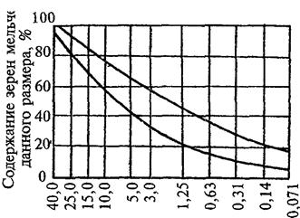
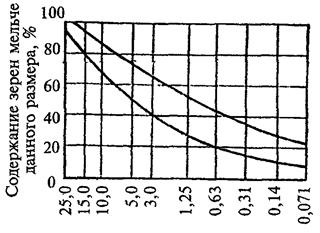
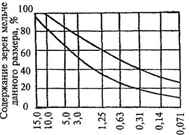
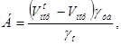
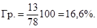
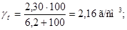
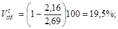
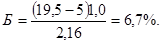

ВЕДОМСТВЕННЫЕ СТРОИТЕЛЬНЫЕ НОРМЫ
|
Согласована с Госстроем СССР |
Утверждена |
ИНСТРУКЦИЯ
ПО УСТРОЙСТВУ ПОКРЫТИЙ
И ОСНОВАНИЙ ИЗ ЩЕБЕНОЧНЫХ,
ГРАВИЙНЫХ И ПЕСЧАНЫХ
МАТЕРИАЛОВ, ОБРАБОТАННЫХ
ОРГАНИЧЕСКИМИ ВЯЖУЩИМИ
ВСН 123-77
Минтрансстрой СССР
Москва 2000
Инструкция предназначена для руководства при проектировании и строительстве дорожных покрытий и оснований из каменных материалов, обработанных органическими вяжущими по способам пропитки, смешения на дороге и из черного щебня, а также слоев износа по способу поверхностной обработки.
В Инструкции изложены требования к материалам, применяемым при строительстве таких покрытий, оснований и слоев износа, а также правила производства работ.
Инструкция не содержит требований к материалам и правила производства работ с применением эмульсий. Эти требования и правила приведены во вновь изданных «Технических указаниях по приготовлению и применению дорожных эмульсий» (ВСН 115-75).
При разработке Инструкции учтены результаты исследований последних лет, а также отечественный и зарубежный опыт строительства подобных покрытий.
Инструкция составлена сотрудниками Ленинградского филиала Союздорнии: заслуженным деятелем науки и техники РСФСР, д-ром техн. наук, проф. А.А. Калертом, канд. техн. наук И.В. Филипповым, инж. Н.С. Ценюгой, а также канд. техн. наук Э.А. Казарновской (Союздорнии).
|
Министерство транспортного строительства СССР |
Ведомственные строительные нормы |
ВСН 123-77 Минтрансстрой СССР |
|
Инструкция по устройству покрытий и оснований из щебеночных, гравийных и песчаных материалов, обработанных органическими вяжущими |
Взамен
|
|
Внесена
|
Утверждена
|
Срок
введения |
1.1. Покрытия, основания и слои износа из щебеночных (гравийных) и песчаных материалов, обработанных органическими вяжущими, разделяют на четыре вида:
слои износа, устроенные по способу поверхностной обработки;
покрытия и основания из фракционированного щебня с пропиткой или полупропиткой вяжущим;
покрытия и основания из песчаных, гравийных, щебеночных холодных смесей, приготовленных по способу смешения на дороге;
покрытия и основания из горячего, теплого или холодного фракционированного щебня, обработанного вяжущим в установке (черный щебень).
1.2. К конструкциям дорожных одежд, устраиваемых предлагаемыми способами, предъявляют следующие требования: соответствие всей дорожной конструкции требуемой прочности; соответствие вида покрытия перспективному движению и климатическим условиям; соответствие требованиям к составу и свойствам материалов покрытия и основания; экономичность при наибольшем использовании местных каменных и вяжущих материалов; возможность комплексной механизации и автоматизации работ с учетом местных условий; обеспечение требуемой ровности и шероховатости покрытий.
1.3. При выборе вида покрытия (табл. 1) или основания (табл. 2) учитывают интенсивность движения и состав транспортных средств, категорию дороги, климатические условия, обеспеченность каменными материалами, особенности технологии и механизации работ, местные производственные и экономические условия.
Таблица 1
Рекомендуемые виды покрытия в зависимости от категории автомобильной дороги и дорожно-климатической зоны
|
Категория автомобильной дороги |
||
|
III |
IV |
|
|
I |
Покрытие из горячего черного щебня, из фракционированного щебня с пропиткой |
Покрытие из теплого черного щебня |
|
II и III |
Покрытие из горячего черного щебня, из фракционированного щебня с пропиткой |
Покрытие из горячего, теплого и холодного черного щебня |
|
Покрытие из смесей, приготовленных по способу смешения на дороге |
||
|
Покрытие из фракционированного щебня с пропиткой |
||
|
IV, V |
Покрытие из смесей, приготовленных по способу смешения на дороге |
|
|
Покрытие из фракционированного щебня с пропиткой |
||
|
Слои износа по способу двойной или тройной поверхностной обработки |
||
|
Примечания 1. Покрытия, указанные в табл. 1, на дорогах IV категории не допускаются, если элементы плана и продольного профиля не соответствуют скорости движения автомобилей: 80 км/ч - в равнинной, 60 км/ч - в пересеченной и 40 км/ч - в горной местности. 2. При реконструкции дорог V категории рекомендуется устраивать покрытия из смесей, приготовленных по способу смешения на дороге с использованием медленно густеющих жидких битумов, или слои износа по способу двойной или тройной поверхностной обработки. Целесообразность устройства таких покрытий должна быть обоснована технико-экономическим расчетом. |
||
Таблица 2
Рекомендуемые виды оснований в зависимости от категории автомобильных дорог и дорожно-климатической зоны
|
Категория автомобильной дороги |
||
|
I - II |
III - IV |
|
|
I |
Основание из теплого черного щебня |
Основание из теплого черного щебня |
|
II и III |
Основание из горячего или теплого черного щебня, из фракционированного щебня с пропиткой |
Основание из горячего или теплого черного щебня, из фракционированного щебня с пропиткой |
|
IV, V |
Основания из горячего черного щебня, из фракционированного щебня с пропиткой |
Основание из горячего черного щебня |
|
Основание из смеси, приготовленной смешением на дороге (при стадийном строительстве) |
||
|
Основание из фракционированного щебня с пропиткой |
||
1.4. При выборе основания дополнительно следует учитывать вид покрытия и конструкцию нижележащих слоев дорожной одежды.
В основаниях недопустимы слои, значительно отличающиеся от покрытий по жесткости, например, покрытие, построенное с применением вязких битумов, а основание - из холодных смесей на медленногустеющих битумах, что возможно только при стадийном строительстве.
Покрытия на основаниях из материалов, обработанных эмульсиями, устраивают с учетом срока формирования таких оснований.
1.5. В I и II дорожно-климатических зонах покрытия и основания устраивают преимущественно из черного щебня или из асфальтобетонных смесей.
1.6. При строительстве асфальтобетонных или цементобетонных покрытий в основании, как правило, применяют смеси, приготавливаемые в установке; в отдельных случаях основания устраивают из черного щебня или из смесей, приготовленных по способу смешения на дороге. При реконструкции и капитальном ремонте дорог в качестве основания могут быть использованы существующие покрытия.
1.7. Перед устройством покрытия основание должно быть сформированным, плотным, ровным и чистым; его поперечный уклон должен быть равен поперечному уклону покрытия.
1.8. Покрытия, используемые в качестве оснований, должны быть плотными, недеформированными, сухими, очищенными от пыли. При необходимости их следует отремонтировать.
1.9. Покрытия по способу пропитки, смешения на дороге или из черного щебня устраивают на основаниях без применения вяжущих или из материалов, укрепленных цементом, местными вяжущими (золы уноса, гранулированные шлаки и др.), и на старых покрытиях всех видов. На этих же основаниях могут быть устроены слои износа способом поверхностной обработки.
При стадийном строительстве покрытия из черного щебня допускается устраивать на основаниях из смесей, приготовленных по способу смешения на дороге и по способу пропитки.
Таблица 3
Наименьшие толщины покрытий и оснований, допускаемые по технологическим условиям
|
Наименьшая толщина слоя, см |
||
|
покрытий |
оснований |
|
|
Щебень, обработанный по способу пропитки |
8 |
8 |
|
Щебень, обработанный по способу полупропитки |
4 |
4 |
|
Щебеночные (гравийные) и песчаные смеси, приготовленные способом смешения на дороге |
8 |
8 |
|
Черный щебень |
5 |
5 |
|
Примечание. При реконструкции толщина покрытия, устраиваемого по способу смешения на дороге, может быть уменьшена до 5 см. Это должно быть обосновано технико-экономическим расчетом. |
||
1.10. Во II и III дорожно-климатических зонах поверхностная обработка обязательна на покрытиях из черного щебня и из смесей, приготовленных по способу смешения на дороге.
В IV и V дорожно-климатических зонах поверхностная обработка обязательна на покрытиях, построенных по способу смешения на дороге из крупно-зернистых смесей. На участках с продольными уклонами более 50 ‰ независимо от вида покрытия необходима поверхностная обработка повышенной шероховатости.
1.11. Минимальная толщина покрытия и основания зависит от наибольшего размера зерен материала, технологии и требуемой прочности дорожной одежды (табл. 3).
1.12. При стадийном строительстве дорожных одежд основания устраивают: способом пропитки, из смесей, приготовленных по способу смешения на дороге, из черного щебня.
Щебень (гравий), керамдор, щебеночно (гравийно)-песчаные смеси
2.1. Для устройства всех трех видов (см. п. 1.1) покрытий и оснований и слоя износа следует применять щебень, полученный дроблением горных пород или валунного камня, щебень из гравия, щебень из металлургических шлаков устойчивой структуры, гравий, отвечающие требованиям ГОСТ 8267-75, ГОСТ 10260-74, ГОСТ 3344-73, ГОСТ 8268-74 и пп. 2.3 и 2.7 настоящей Инструкции.
2.2. В качестве каменного материала можно применять искусственный керамический щебень (гравий) - керамдор, который по показателям дробимости, износа и морозостойкости должен соответствовать требованиям ГОСТ 8267-75 или ГОСТ 8268-74 и пп. 2.3 - 2.6 Инструкции.
2.3. Марку щебня (гравия) выбирают по табл. 4.
2.4. В соответствии с ГОСТ 8267-75, ГОСТ 8268-74 и ГОСТ 10260-74 количество зерен слабых и выветрелых горных пород не должно превышать (по массе):
в щебне марок 1400, 1200 - 5 %;
в щебне марок 1000, 800, 600, 400, в гравии и щебне из гравия марок Др 8, Др 12, Др 16 - 10 %;
в щебне марок 300, 200, в гравии и щебне из гравия марки Др 24 - 15 %.
Щебень из гравия должен содержать дробленых зерен (по массе) не менее 80 %.
2.5. В щебне, применяемом для устройства покрытий по способу смешения на дороге, не должно быть больше 35 % зерен пластинчатой (лещадной) формы, а для покрытий других видов - 25 % (по массе).
Таблица 4
Требования к щебню (гравию) для устройства покрытий, оснований и слоев износа
|
Щебень для слоев, устраиваемых способом поверхностной обработки |
Щебень для покрытий, устраиваемых способом пропитки |
Холодные смеси, приготовленные способом смешения на дороге |
Черный щебень (горячий, теплый и холодный) |
||||
|
Покрытие |
Основание |
Покрытие |
Основание |
Покрытие |
Основание |
||
|
Марка по прочности или по дробимости, не ниже: |
|||||||
|
щебня из изверженных пород и керамдора |
1000 |
800 |
600 |
800 |
600 |
800 |
600 |
|
щебня из осадочных и метаморфических пород |
800 |
600 |
600 |
600 |
300 |
600 |
300 |
|
гравия и щебня из гравия |
Др 12 |
Др 12 |
Др 16 |
Др 16 |
Др 24 |
Др 12 |
Др 16 |
|
Марка по износу в полочном барабане, не ниже: |
|||||||
|
щебня из изверженных пород, керамдора |
|||||||
|
щебня из шлака устойчивой структуры |
И-II |
И-III |
И-IV |
И-IV |
И-IV |
И-III |
И-IV |
|
щебня из осадочных и метаморфических пород |
И-III |
И-IV |
И-IV |
И-IV |
И-IV |
И-IV |
И-IV |
|
гравия и щебня из гравия |
И-II |
И-IV |
И-IV |
И-IV |
И-IV |
И-IV |
И-IV |
|
Степень морозостойкости щебня (гравия), не ниже: |
|||||||
|
в суровых климатических условия |
Мрз 25 |
Мрз 25 |
Мрз 25 |
Мрз 25 |
Мрз 25 |
Мрз 25 |
Мрз 25 |
|
в умеренных |
Мрз 25 |
Мрз 25 |
Мрз 25 |
Мрз 25 |
Мрз 25 |
Мрз 25 |
Мрз 25 |
|
в мягких |
Мрз 15 |
Мрз 15 |
Мрз 15 |
Мрз 15 |
Мрз 15 |
Мрз 15 |
Мрз 15 |
|
Примечания: 1. При испытании гравия на морозостойкость количество циклов может быть уменьшено до 15. 2. Суровые климатические условия характеризуются среднемесячной температурой наиболее холодного месяца ниже -15 °С; умеренные - от -5 до -15 °С, мягкие - до -5 °С. |
|||||||
При устройстве оснований способом пропитки или из черного щебня содержание этих зерен в щебне не должно быть более 35 %.
2.6. Пылевидных, глинистых и илистых частиц, определяемых отмучиванием, должно быть:
в щебне из изверженных и метаморфических пород - не более 1 %, из осадочных пород марок от 600 до 1200 - не более 2 %, марок от 200 до 400 - не более 3 % по массе;
в щебне из гравия марок по дробимости Др 8, Др 12, Др 16 более 1 %, марки Др 24 не более 2 % (по массе);
в гравии марок Др 8, Др 12, Др 16 - не более 1 %, марки Др 24 не более 3 % (по массе).
Содержание глины в комках во всех указанных материалах не должно быть более 0,25 %, а в гравии марки Др 24 - не более 0,5 % (по массе).
2.7. В районах, где встречаются засоленные гравийные материалы, содержание водорастворимых солей перед обработкой вяжущими не должно превышать пределов, указанных в табл. 5.
Таблица 5
Содержание водорастворимых солей в гравийных (щебеночных) смесях
|
Порода преобладающих зерен гравия |
Содержание водорастворимых солей (кроме гипса), % (по массе), не более |
В том числе |
Допускаемое содержание гипса, %, не более |
|||
|
NaCl |
Na2SO4, MgSO4 |
Na2CO3, NaHCO3 |
||||
|
Жидкие битумы и дегти |
Карбонатные (известняковые, доломитовые) |
1,0 |
До 0,7 |
До 0,2 |
До 0,1 |
1,5 |
|
Некарбонатные |
2,0 |
До 1,5 |
До 0,4 |
До 0,1 |
3,0 |
|
|
Вязкие битумы |
Карбонатные (известняковые, доломитовые) |
1,8 |
До 1,5 |
До 0,2 |
До 0,1 |
1,5 |
|
Некарбонатные |
3,6 |
До 3,0 |
До 0,5 |
До 0,1 |
3,0 |
|
2.8. Щебень (гравий) кислых и окремненных пород (граниты, кварцевые диориты, песчаники, порфиры, липариты, кварциты и др.) проверяют на сцепление с битумом по ГОСТ 12801-71.
Песок
2.9. В смесях для устройства покрытий по способу смешения на дороге используют пески природные или дробленые с модулем крупности не менее 2, фракционированные и обогащенные, отвечающие требованиям ГОСТ 8736-67.
Мелкий песок (с модулем крупности 1 - 2) применяют при условии обогащения его добавками крупного песка (природного или дробленого), количество которых устанавливается так, чтобы зерновой состав смеси щебня (гравия), песка и минерального порошка соответствовал требованиям п. 2.27.
2.10. Дробленый песок получают дроблением невыветрелых изверженных и метаморфических горных пород марки по прочности не ниже 800, осадочных - не ниже 400, гравия - не ниже марки Др 16.
2.11. В смесях со щебнем (гравием) марка по дробимости исходной горной породы дробленого песка должна быть не ниже марки щебня (гравия).
Минеральный порошок
2.13. В смесях для устройства покрытия по способу смешения на дороге в качестве минерального порошка применяют отходы асбоцементного производства, золу уноса, фильтрпрессные отходы, пыль уноса цементных заводов, пылеватые грунты с числом пластичности не более 10. Частиц мельче 0,071 мм в минеральном порошке должно быть не менее 60 %.
2.14. Пористость при уплотнении под нагрузкой 400 кгс/см2 должна быть не более 45 % по объему для золы уноса (для частиц мельче 0,315 мм) и пыли уноса цементных заводов и шлаков, для прочих порошков не более 35 %.
Водорастворимых соединений должно быть не более: в пыли уноса цементных заводов - 8 %; в промышленных отходах - 0,5 %, в грунтах с содержанием солей Na2SO4 и MgSO4 - 0,25 % и солей Na2CO3 и NaHCO3 - 0,1 %, в золах уноса ТЭЦ - 1 % (по массе).
Кроме того, золы уноса ТЭЦ должны содержать не более 3 % СаО. Его содержание определяют по методике, изложенной в «Инструкции» ВСН 59-68; потери при прокаливании зол уноса ТЭЦ должны быть не более 20 %.
Органические вяжущие материалы и разжижители
2.15. При устройстве покрытий и оснований применяют следующие органические вяжущие:
нефтяные дорожные вязкие битумы, отвечающие требованиям ГОСТ 22245-76;
нефтяные дорожные жидкие битумы медленногустеющие и густеющие со средней скоростью, тяжелые нефти, отвечающие требования ГОСТ 11955-74;
каменноугольные дорожные дегти, отвечающие требованиям ГОСТ 4641-74;
каменноугольные смешанные дегти (приложение 1);
сланцевые жидкие битумы, отвечающие требованиям РСТ ЭССР 82-72 (приложение 2).
2.16. Вид и марка органического вяжущего назначаются в зависимости от вида покрытия, категории дороги, назначения конструктивного слоя, способа работ и дорожно-климатической зоны (табл. 6).
Таблица 6
Вяжущие материалы, рекомендуемые для устройства покрытий и оснований
|
Марки вяжущих, рекомендуемые в дорожно-климатических зонах |
|||
|
I |
II, III |
IV, V |
|
|
Поверхностная обработка |
- |
БНД-130/200, |
БНД-130/200, |
|
(для устройства слоев износа) |
БНД-90/130 |
БНД-90/130 |
|
|
Пропитка |
- |
БНД-130/200, |
БНД-90/130, |
|
БНД-90/130, |
БНД-60/90, |
||
|
БНД-60/90 |
Д-6, ДС-7 |
||
|
Смешение на дороге |
- |
СГ-40/70, |
СГ-70/130, |
|
МГ-40/70, |
МГ-70/130, |
||
|
Д-3, ДС-4 С-20/35, С-35/70 |
Д-4, ДС-5 |
||
|
Горячий черный щебень |
- |
БНД-90/130, |
БНД-90/130, |
|
БНД-60/90, |
БНД-60/90, |
||
|
БНД-40/60 |
БНД-40/60 |
||
|
Теплый черный щебень |
БНД-200/300, |
БНД-200/300, |
БНД-200/300, |
|
БНД-130/200, |
БНД-130/200, |
БНД-130/200, |
|
|
СГ-130/200 |
СГ-130/200, |
СГ-130/200, |
|
|
МГ-130/200, |
МГ-130/200, |
||
|
Д-6, ДС-7 |
|||
|
Холодный черный щебень |
- |
СГ-70/130, |
СГ-70/130, |
|
МГ-70/130, |
МГ-70/130, |
||
|
Д-5, ДС-6 |
Д-5, ДС-6 |
||
|
Примечание. Битумы марок БНД могут быть заменены битумами марок БН с той же вязкостью. |
|||
2.17. На дорогах, проходящих через города и населенные пункты, в верхнем слое покрытия запрещается применять каменно-угольные дегти и сланцевые битумы как в чистом виде, так и в смеси с нефтяными битумами или гудронами.
2.18. Нефтяные жидкие и вязкие битумы могут быть приготовлены на нефтеперерабатывающих заводах без добавки или с добавкой ПАВ. Последние вводят в битум, если он не выдерживает испытания на сцепление со стандартным каменным материалом.
При содержании ПАВ к наименованию марки битума добавляется индекс «п», например, БНДп - 40/60, СГп - 40/70.
2.19. В исключительных случаях, когда отсутствуют готовые битумы марок БНД-200/300, БНД-130/200, СГ-130/200, МГ-130/200, СГ-70/130 и МГ-70/130, их заменяют битумами, полученными разжижением битумов марок БНД-40/60, БНД-60/90, БНД-90/130 разжижителями (нефтяным гудроном, нефтью, мазутом, жидкими битумами марок МГ-25/40 и МГ-40/70, каменноугольным дегтем или маслом, сланцевым маслом, керосином).
Вязкость разжиженных битумов доводят до вязкости той марки, которую они заменяют. По фракционному составу жидкие битумы могут не соответствовать требованиям ГОСТ 11955-74. Вязкие битумы могут не соответствовать требованиям ГОСТ 22245-66 по глубине проникания при 0 °С, температуре разжижения, по свойствам остатка после прогрева и температуре вспышки. Разжижители должны отвечать следующим требованиям: мазут - ГОСТ 10565-75; жидкие битумы марок МГ-25/40 и МГ-40/70 - ГОСТ 11955-74; каменноугольные дегти - ГОСТ 4641-74; нефтяной гудрон - ТУ 101154-71; каменноугольное масло - ГОСТ 2770-74; ТУ-584; керосин - ГОСТ 4753-68; сланцевое масло - ГОСТ 4806-66.
Мазут, жидкие битумы, дегти, гудрон, а также нефть относятся к тяжелым разжижителям; каменноугольное и сланцевое масла, керосин - к легким. Тяжелые разжижители применяют для получения медленногустеющих жидких битумов, легкие - для жидких битумов, густеющих со средней скоростью, а также битумов с глубиной проникания 130 - 200 или 200 - 300.
Соотношение битума и разжижителя устанавливает лаборатория. Ориентировочное количество разжижителя устанавливают по приложению 3. При использовании в качестве разжижителя керосина его максимальное количество, добавляемое к битуму, не должно превышать 10 %.
2.20. При необходимости нефтяные битумы могут быть заменены нефтяными гудронами или нефтяными гудронами в смеси с вязкими сланцевыми битумами. По вязкости нефтяные гудроны или их смеси с вязкими сланцевыми битумами должны соответствовать марке нефтяного битума, рекомендуемой для конкретных условий строительства (см. табл. 6). Максимальное количество вязкого сланцевого битума в смеси с нефтяным гудроном не должно превышать 40 %. Свойства нефтяного гудрона, предназначенного для замены битума, должны соответствовать требованиям стандарта на медленногустеющие жидкие нефтяные битумы. Свойства вязких сланцевых битумов должны соответствовать РСТ ЭССР 82-72 (приложение 4).
2.21. Для улучшения прилипания вяжущего к влажным каменным материалам и увеличения начальной прочности покрытий рекомендуется применять составленные битумно-дегтевые материалы. Их используют при обработке влажных каменных материалов, например при способе смешения на дороге и пропитке. Соотношение битума и дегтя устанавливают по показателю требуемой вязкости вяжущего для принятого способа работ. В составленной битумно-дегтевой смеси не должно быть выпадения осадка после прогрева в термостате в течение 10 ч при температуре 120 °С.
Поверхностно-активные вещества и активаторы
2.22. Весной, осенью, а также летом (в условиях повышенной влажности) при обработке каменных материалов органическим вяжущим рекомендуется применять ПАВ и активаторы.
Добавки ПАВ назначают с целью:
улучшения сцепления вяжущих с сухой и влажной поверхностью каменных материалов, входящих в состав смесей, если показатели их сцепления без ПАВ ниже оценки «хорошо»;
улучшения технологических показателей при обработке каменных материалов (снижение температуры и времени их нагрева, увеличение степени обволакивания вяжущим, сокращение времени перемешивания);
улучшения транспортабельности, удобоукладываемости и уплотняемость обработанных материалов;
ускорения формирования покрытия, устраиваемого с вяжущим малой вязкости.
Активаторы поверхности каменных материалов применяют для подготовки материалов кислых пород к взаимодействию с битумом, для улучшения технологического процесса приготовления смесей с влажными каменными материалами.
ПАВ и активаторы применяют в соответствии с Инструкцией ВСН 59-68.
Подбор состава смеси
2.23. Состав смесей подбирают при устройстве покрытий и оснований по способу смешения на дороге.
2.24. Щебеночно-песчаные (гравийно-песчаные) смеси составляют из щебня (гравия), песка и минерального порошка; песчаные - из песка и минерального порошка. Допускается использовать природные щебеночно-песчаные (гравийно-песчаные) и песчаные смеси, если их зерновой состав соответствует требованиям п. 2.27, физико-механические показатели зерен крупнее 5 мм - требованиям пп. 2.3 - 2.6, а частиц мельче 5 мм - требованиям п. 2.9 и п. 2.12.
Покрытия и основания по способу смешения на дороге целесообразно устраивать из местных песчано-гравийных смесей с добавлением минерального порошка или без него.
2.25. В зависимости от наибольшего размера частиц каменного материала смеси подразделяют на: крупнозернистые - до 40 мм; среднезернистые - до 20 (25) мм; мелкозернистые - до 15 (10) мм; песчаные - до 5 мм.
2.26. Подбор состава смесей преследует цель определения в данных конкретных условиях состава смеси, имеющего соотношение исходных материалов - каменных и вяжущих, отвечающее требованиям Инструкции (табл. 8). Окончательную норму расхода вяжущего уточняют лабораторным подбором.
2.27. Зерновой состав каменных материалов для смесей следует подбирать по принципу непрерывного зернового состава (см. табл. 8 и рис. 1). При этом кривая зернового состава должна располагаться в зоне, ограниченной предельными кривыми, и не иметь резких переломов.
2.28. Свойства холодных смесей, приготовленных по способу смешения на дороге, должны соответствовать требованиям табл. 7.
2.29. Качество смесей может быть улучшено введением ПАВ и активаторов.
Для гравийных смесей с содержанием дробленых зерен менее 35 % с целью повысить их прочность и сдвигоустойчивость рекомендуется использовать вяжущее с максимально допустимой вязкостью и увеличить содержание минерального порошка в рекомендуемых пределах.
Таблица 7
Физико-механические свойства холодных смесей, приготовленных способом смешения на дороге
|
Нормы |
|
|
Остаточная пористость, % по объему |
3 - 9 |
|
Водонасыщение, % по объему |
3 - 8 |
|
Набухание, % по объему, не более |
3 |
|
Предел прочности при сжатии R20 при температуре +20 °С, кгс/см2, не менее |
8 |
|
Коэффициент водоустойчивости, не менее |
0,5 |
|
Коэффициент длительной водоустойчивости, не менее |
0,4 |
|
Примечания: 1. Предел прочности R20 дан для образцов из мелкозернистых смесей с высотой h и диаметром d, равными 71,4 мм; для образцов из песчаных смесей с h = d = 50,5 мм требования должны быть увеличены на 20 %, а для образцов из крупно- и среднезернистых смесей с h = d = 101,5 мм - уменьшены на 20 %. 2. Показатели физико-механических свойств смесей с битумами и дегтями определяют в соответствии с ГОСТ 12801-71. |
|
2.30. Для увеличения прочности покрытий в песчано-гравийные смеси добавляют дробленые зерна в количестве 25 - 45 % общего объема гравийного материала с зернами крупнее 5 мм.
Таблица 8
Состав каменных материалов для смесей, приготавливаемых способом смешения на дороге, и содержание в них битума
|
Содержание зерен каменного материала, % по массе, мельче данного размера, мм |
Содержание битума, % по массе |
|||||||||||||
|
40 |
35 |
25 |
20 |
15 |
10 |
5 |
3 |
1,25 |
0,63 |
0,315 |
0,14 |
0,071 |
||
|
Крупнозернистые |
95 - 100 |
90 - 100 |
80 - 93 |
74 - 88 |
67 - 84 |
56 - 76 |
42 - 64 |
33 - 57 |
22 - 44 |
16 - 35 |
11 - 28 |
8 - 22 |
6 - 18 |
5,0 - 6,0 |
|
Среднезернистые |
- |
- |
95 - 100 |
87 - 100 |
77 - 93 |
66 - 86 |
48 - 73 |
40 - 65 |
28 - 52 |
20 - 43 |
15 - 35 |
11 - 28 |
8 - 23 |
6,0 - 8,0 |
|
Мелкозернистые |
- |
- |
- |
- |
95 - 100 |
83 - 100 |
63 - 85 |
52 - 75 |
35 - 60 |
25 - 49 |
18 - 38 |
12 - 30 |
10 - 25 |
6,5 - 8,5 |
|
Песчаные |
- |
- |
- |
- |
- |
- |
95 - 100 |
77 - 90 |
50 - 75 |
34 - 64 |
23 - 52 |
14 - 40 |
10 - 30 |
7,0 - 10,0 |
2.31. Гравийные, песчано-гравийные смеси рекомендуется пропускать через дробилку, если получаемые при этом смеси будут содержать не менее 40 % дробленых зерен крупнее 5 мм.
2.33. Содержание вяжущего в смесях должно быть оптимальным, обеспечивающим допускаемую остаточную пористость и наибольшую прочность покрытия при данном каменном материале.
2.34. Составы смесей подбирают из материалов, свойства которых соответствуют установленным. При подборе составов смесей определяют:
соотношение в смеси каменных материалов - щебня (гравия), песка и минерального порошка, обеспечивающее ее оптимальную плотность;
оптимальное количество вяжущего в смеси, обеспечивающее максимальную прочность и оптимальную остаточную пористость покрытия.
2.35. Качество каменных материалов и вяжущего должно соответствовать требованиям, изложенным в разделе 2 настоящей Инструкции.
Расчет состава каменных материалов
2.36. Массовую долю щебня (гравия), песка и минерального порошка рассчитывают, исходя из зернового состава каждого из этих материалов и требуемого зернового состава смеси, выбранного в зависимости от ее вида (см. табл. 8 и рис. 1).
Крупнозернистые

Размер зерен, мм
Среднезернистые

Размер зерен, мм
Мелкозернистые

Размер зерен, мм
Песчаные
Размер зерен, мм
Рис. 1. Кривые зерновых составов плотных смесей непрерывной гранулометрии
В соответствии с требованием табл. 8 содержание минерального порошка в смесях рекомендуется принимать: для щебеночно-песчаных - близкое к минимальному количеству; для гравийно-песчаных - близкое к среднему количеству.
При несоответствии свойств подобранной смеси требованиям табл. 7 содержание порошка увеличивают.
Определение оптимального содержания вяжущего в смеси
2.37. Оптимальное количество вяжущего рассчитывают, исходя из фактической пористости минеральной части лабораторных образцов смеси и заданной остаточной пористости смеси в соответствии с требованиям табл. 7. Три образца изготовляют из смеси, в которой количество вяжущего принимают на 0,3 - 0,5 % меньше нижнего предела табл. 8. Определяют объемную массу образцов, плотность смеси каменных материалов, входящих в состав смеси, и рассчитывают требуемое количество битума по формуле:

где Vоnop - пористость смеси каменных материалов испытанных образцов;
Vnop - заданная остаточная пористость смеси при 20 °С, %;
gуб - плотность битума при 20 °С, г/см3;
gо - объемная масса смеси каменных материалов испытанных образцов, г/см3.
С количеством битума, полученным расчетом, приготовляют контрольную смесь, формуют из нее три образца и определяют остаточную пористость. При соответствии остаточной пористости образцов, требуемой для данного вида смеси, приготовляют смесь такого же состава, из которой формуют и уплотняют необходимое для определения всех показателей физико-механических свойств (см. табл. 7) количество образцов.
Состав смеси можно считать подобранным в том случае, если остаточная пористость находится в требуемых пределах, а показатели физико-механических свойств удовлетворяют требованиям табл. 7.
Если остаточная пористость контрольной смеси больше требуемой, то приготовляют вторую смесь с увеличенным количеством битума, а если остаточная пористость меньше требуемой, то в повторной смеси количество битума уменьшают. Если смеси имеют требуемую остаточную пористость, но по другим показателям физико-механических свойств не отвечают установленным требованиям, следует несколько изменить зерновой состав минеральной части (как правило, за счет увеличения количества минерального порошка в установленных пределах) и повторить расчет оптимального количества вяжущего. При поступлении битума из другого нефтеперерабатывающего завода оптимальное количество битума определяют вновь.
Пример подбора состава смеси
Необходимо подобрать состав мелкозернистой смеси для покрытия. Имеются следующие материалы: битум МГ-70/130, гравий, песок, местный грунт (заполнитель) - супесь, свойства которых соответствуют техническим требованиям, а зерновой состав приведен в табл. 9.
Расчет состава каменных материалов. Определяют соотношение массы гравия, песка и минерального порошка, при котором зерновой состав их смеси удовлетворяет требованиям табл. 8, а его графическое изображение представляет собой плавную кривую, лежащую в заданных пределах (см. рис. 1).
Расчет количества гравия. По кривым (см. рис. 1) или по табл. 8 устанавливают, что частиц гравия крупнее 5 мм в смеси должно быть 15 - 37 % (через сито с размером отверстий 5 мм должно проходить 63 - 85 % материала). Принимают требуемое содержание гравия крупнее 5 мм - 35 %. В гравии количество зерен крупнее 5 мм равно 92 % (в песке и минеральном порошке зерен крупнее 5 мм нет), поэтому гравия требуется

Полученное значение вносят в табл. 9 и рассчитывают содержание в смеси каждой фракции гравия (берется 38 % от процента содержания в гравии каждой фракции).
Расчет количества песка и минерального порошка. По рис. 1 или табл. 8 определяют, что количество частиц мельче 0,071 мм в каменных материалах смеси должно быть 10 - 25 %. Принимается для расчета 13 %. В минеральном порошке содержится 78 % частиц мельче 0,071 мм, отсюда количество его в смеси должно быть:
Таблица 9
Пример расчета зернового состава
|
Содержание зерен, % по массе, мельче данного размера, мм |
|||||||||
|
15 |
10 |
5 |
3 |
1,25 |
0,63 |
0,315 |
0,14 |
0,071 |
|
|
Исходные материалы |
|||||||||
|
Гравий (5 - 15 мм) |
100 |
54 |
8 |
- |
- |
- |
- |
- |
- |
|
Песок |
- |
- |
- |
100 |
70 |
60 |
34 |
18 |
3 |
|
Минеральный порошок (супесь) |
- |
- |
- |
- |
- |
100 |
90 |
81 |
78 |
|
Расчетные данные |
|||||||||
|
Гравий 38 % |
38 |
20 |
3 |
- |
- |
- |
- |
- |
- |
|
Песок 47 % |
47 |
47 |
47 |
47 |
33 |
28 |
16 |
8 |
1,4 |
|
Минеральный порошок 15 % |
15 |
15 |
15 |
15 |
15 |
15 |
13 |
12 |
12 |
|
Итого: |
100 |
82 |
35 |
62 |
48 |
43 |
29 |
20 |
13,4 |
Вместе с тем в песке также содержится некоторое количество частиц мельче 0,071 мм, поэтому принимают содержание минерального порошка 15 %. Это количество записывают в табл. 9 и далее рассчитывают содержание в смеси каждой фракции минерального порошка (берется 15 % от процента содержания в минеральном порошке каждой фракции).
Количество песка в смеси составит:
П = 100 - (Гр. + МП) = 100 - (38 + 15) = 47 %.
Определение оптимального количества вяжущего. Примерное количество вяжущего определяют расчетом. С этой целью гравий, песок и минеральный порошок в выбранных соотношениях смешивают с вяжущим, количество которого принимают на 0,3 % меньше нижнего предела, указанного в табл. 8. Из полученной смеси уплотняют три образца диаметром и высотой 71,4 мм. Через сутки определяют их объемную массу, вычисляют плотность скелета смеси без вяжущего и на основании этих данных находят объемную массу gо и пористость Vопор минеральной части образцов. Зная плотность вяжущего gуб и требуемую согласно табл. 7 остаточную пористость образцов Vпор, рассчитывают ориентировочное количество вяжущего по формуле (п. 2.37).
Например, объемная масса пробных образцов смеси при содержании вяжущего 6,2 % (сверх 100 % минеральной части) - 2,30 г/см3; плотность скелета минеральной части смеси - 2,69 г/см3; плотность вяжущего - 1 г/см3, заданная остаточная пористость смеси 5 %. Тогда
 

С полученным количеством вяжущего - 6,7 % - изготовляют контрольную смесь, из нее уплотняют три образца и определяют остаточную пористость смеси. Если она будет в требуемых пределах (3 - 9 %), уплотняют девять образцов, которые испытывают. Полученные показатели физико-механических свойств образцов должны удовлетворять требованиям табл. 7.
Размещение баз по приготовлению черного щебня и вяжущих
3.1. Базы по приготовлению горячего, теплого и холодного черного щебня (АБЗ) размещают у железнодорожных и водных путей или у строящейся автомобильной дороги. При использовании местных материалов базы, как правило, располагаются в притрассовом карьере. Удаленность базы от места укладки щебня определяют допускаемой продолжительностью его транспортирования. Для горячего черного щебня при температуре воздуха не ниже +10 °С эта продолжительность должна быть не более 1,5 ч.
Продолжительность транспортирования теплого черного щебня при температуре воздуха +10 °С должна быть не более 2,5 ч. Максимальную дальность возки холодного черного щебня определяют на основе экономических расчетов.
3.2. Базы по приготовлению вяжущего размещают так же, как базы по приготовлению черного щебня.
3.3. Количество смесительных машин, установок для приготовления вяжущего и другого технологического оборудования назначают, исходя из потребности той или иной разновидности щебня или вяжущего для планируемого объема работ с учетом среднегодовой производительности этих машин, установок и технологического оборудования и продолжительности строительного сезона.
3.4. При сооружении баз следует руководствоваться типовыми проектами, предусматривающими автоматизацию управления всеми агрегатами с одного пульта.
Правила приемки и хранения материалов
3.5. Щебень (гравий), щебеночно (гравийно)-песчаные смеси, песок, минеральный порошок поставляют на асфальтобетонные заводы или прирельсовые склады в готовом виде со специализированных или притрассовых предприятий и принимают с учетом требований ГОСТ 8267-75, ГОСТ 10260-74, ГОСТ 3344-73, ГОСТ 17060- 71, ГОСТ 8268-74, ГОСТ 8735-75. Для устройства покрытий и оснований из смеси, приготовленной способом смешения на дороге или способом пропитки, а также для способа поверхностной обработки каменные материалы можно доставлять на место производства работ.
3.6. Щебень (гравий), щебеночно (гравийно)-песчаные смеси и песок разной крупности хранят в отдельных штабелях по фракциям. Минеральный порошок следует хранить в закрытом складе.
3.7. Органические вяжущие поступают на прирельсовую базу в железнодорожных цистернах или бункерных полувагонах; их сливают в хранилище временного или постоянного типа.
Нефтяные битумы, приготовляемые на нефтеперерабатывающих заводах и специальных базах, на расстояние не более 300 км рекомендуется доставлять автобитумовозами или автогудронаторами и сливать непосредственно в расходные емкости (цистерны, баки и т.п.). Транспортирование вяжущих с прирельсовых баз к месту работы осуществляется автогудронаторами или автобитумовозами.
3.8. При подаче цистерн и бункерных полувагонов под разгрузку следует соблюдать правильную расстановку их по фронту слива в соответствии с видами поступивших вяжущих материалов. Обязательно проверяют соответствие поданных транспортных средств полученным документам, наличие паспортов на получаемые материалы, наличие пломб, сохранности оттисков на них, соответствие дат оттисков датам отправочных документов, отсутствие утечки вяжущих через заглушки сливных приборов. После осмотра транспортных средств составляют ведомость приемки вяжущих и отбирают пробы для лабораторных испытаний согласно п. 8.6.
3.9. Бункерные полувагоны разгружают после прогрева паровой рубашки и разогрева примыкающего к рубашке слоя вяжущего материала. К паровой рубашке подают пар из парообразователя, присоединяя к нижнему штуцеру бункера шланг. Через 10 - 15 мин пуск пара прекращают, после чего шланги отсоединяют и выгружают вяжущее.
3.10. В цистернах, оборудованных змеевиками, вяжущее разогревают паром до жидкого состояния, присоединяя шланг от парообразователя к патрубку змеевика цистерны. Продолжительность подогрева зависит от вязкости и температуры вяжущего, температуры воздуха. Слив надо начинать после подогрева вяжущего во всей цистерне. Сливной прибор перед открытием клапана должен быть прогрет.
3.11. В цистерны, не оборудованные подогревательным устройством, для подогрева вяжущих через горловину вводят систему змеевиков или электрогрелок. В крайнем случае допускается подогрев острым паром только тех материалов, в которых содержится некоторое количество воды (например, сырые дегти).
3.12. Вяжущее из цистерны должно быть слито полностью. По окончании слива сливные приборы, крышки люков и бункеров закрывают и закрепляют болтами. Вагоны после разгрузки тарных материалов или песка должны быть полностью очищены.
3.13. Хранение вяжущих должно быть организовано так, чтобы была исключена их потеря, загрязнение и обводнение. Битумы, густеющие со средней скоростью, и эмульсии хранят в металлических емкостях (цистерны, баки большой емкости - 30 т и более и др.), снабженных плотно закрывающимися крышками, а также в бетонированных ямах крытого типа, разделенных на секции для битумов различных марок и составов.
Битумы и дегтевые материалы хранят в хранилищах постоянного или временного типа.
Вяжущие, поступившие в штучной таре (например, в бочках), хранят в сараях или под навесом в штабелях в два яруса, стоймя или на ребро, пробками вверх, с прокладками из досок. Пек, поступивший навалом, следует хранить в сараях или под навесом.
3.14. Для вязких битумов устраивают постоянные или временные хранилища непосредственно в грунте: ямного, полуямного или наземного типа. Дно и стенки хранилищ постоянного типа укрепляют кирпичной или каменной кладкой на тощем цементном растворе. В хранилищах временного типа дно и стенки укрепляют цементным или песчано-глинистым раствором, лоскутами и т.п. Хранилища всех типов следует устраивать крытыми во избежание обводнения вяжущих.
Независимо от типа хранилищ в них обязательно должны быть предусмотрены все необходимые меры техники безопасности и пожарной безопасности (пп. 9.26 - 9.28).
3.15. Хранилища вязких и жидких битумов и дегтей должны иметь оборудование для подогрева вяжущего. Подогревательные устройства представляют собой систему труб, по которым пропускают пар, горячие газы, горячую воду, или систему электрогрелок.
Для жидких вяжущих подогревательными устройствами оборудуют, как правило, только зону подогрева. Для бесперебойного поступления в зону подогрева твердых вяжущих подогревательными устройствами оборудуют также и хранилище.
3.16. Зона подогрева в хранилищах для битумов, дегтей и жидких битумов должна быть устроена так, чтобы имелась возможность ее полного освобождения для очистки и ремонта. Подогревательные устройства должны быть выполнены в виде отдельных секций таким образом, чтобы была возможность подъема и извлечения их для осмотра и ремонта.
3.17. Катионактивные вещества, доставляемые в специальной таре, хранят в закрытых помещениях.
Жидкие анионактивные вещества (окисленный рисайкл, мазутные полукоксовые фенолы), доставляемые в цистернах, после слива хранят в водонепроницаемых емкостях, защищенных от попадания в них влаги и от засорения.
Вязкие и твердые анионактивные вещества (окисленный петролатум, окисленный парафин, синтетические жирные кислоты, второй жировой гудрон и др.), доставляемые в железнодорожных цистернах с теплоизоляцией, следует хранить в оборудованных подогревом крытых хранилищах для предохранения от засорения и влаги. Анионактивные вещества, доставляемые в бочках, следует хранить в крытом помещении или под навесом (с теневой стороны).
Древесные, газогенераторные и сухоперегонные, а также торфяные и сланцевые смолы хранят в водонепроницаемых емкостях, оборудованных подогревом, исключающих утечку материала и защищающих его от попадания влаги. Хлорное железо, доставляемое в железных барабанах, хранят в крытом помещении или под навесом.
3.18. Известь, цемент и сланцевую золу следует хранить в закрытых помещениях, предотвращающих их увлажнение и засорение примесями.
Подготовка каменных материалов
3.19. Щебень (гравий), щебеночные (гравийные) смеси, пески, предназначенные для обработки способами смешения на дороге или в установке и не соответствующие рекомендуемым составам, улучшают дополнительной сортировкой, мойкой, добавлением недостающих фракций.
3.20. Минеральный порошок поступает на базу в готовом виде или может быть приготовлен на базе помолом в шаровых мельницах сухого известняка, основного металлургического шлака, ракушечника и других карбонатных горных пород.
Подготовка органических вяжущих
3.21. Вяжущие следует нагревать до температуры, указанной в табл. 10.
Нагрев вяжущего выше рабочей температуры не допускается.
3.22. Все органические вяжущие, рабочая температура которых выше +100 °С или обезвоживание которых по условиям работы обязательно, приготовляют:
в специальных битумоплавильных установках непрерывного действия с газовым или электрическим подогревом (автоматизированные установки), где воду из вяжущего выпаривают в «тонком слое»;
в битумных котлах периодического действия объемом от 6000 до 15000 л, объединенных в батареи из трех котлов с обмуровкой кирпичной кладкой или без нее, с каналами для горячих газов.
Все установки для приготовления вяжущих обязательно должны иметь огнетушители и ящики с песком.
3.23. Вяжущие с рабочей температурой нагрева ниже +100 °С, обезвоживание которых по условиям производства работ не требуется, можно нагреть до рабочих температур в зонах подогрева хранилищ (см. табл. 10).
3.24. Подготовку вяжущего в котлах ведут по двухступенчатому циклу: в одних котлах вяжущее нагревают и при необходимости обезвоживают, затем перекачивают в другие (расходные) котлы, где нагревают его до рабочей температуры.
Вяжущие в котлах нагревают только после заполнения ими 1/3 или 1/3 объема котла так, чтобы жаровые трубы или нижние боковые каналы были покрыты вяжущим. Затем по мере нагрева вяжущее подают небольшими порциями до заполнения объема котла на 2/3. При нагреве температура приготовляемого материала не должна превышать +105 °С, если вяжущее обводнено. Нагрев продолжается до полного обезвоживания вяжущего. Во время нагрева вяжущий материал необходимо тщательно перемешивать. Вяжущее можно считать готовым только после того, как прекратится вспенивание и оно нагреется до рабочей температуры (см. табл. 10). Температуру нагреваемого вяжущего следует измерять через каждые 2 ч, для чего на плавильных установках, котлах и расходных (рабочих) емкостях должны быть термометры или другие приборы для измерения температуры.
Таблица 10
Температура нагрева битумов и дегтей
|
Температура вяжущих, °С |
||
|
без добавки ПАВ |
с добавкой ПАВ |
|
|
Битумы нефтяные жидкие: |
||
|
СГ-25/40 |
60 - 70 |
- |
|
МГ-25/40 |
60 - 70 |
- |
|
СГ-40/70 |
70 - 80 |
- |
|
МГ-40/70 |
70 - 80 |
- |
|
СГ-70/130 |
80 - 90 |
80 - 90 |
|
МГ-70/130 |
80 - 90 |
80 - 90 |
|
СГ-130/200 |
90 - 100 |
90 - 100 |
|
МГ-130/200 |
90 - 100 |
90 - 100 |
|
Битумы нефтяные вязкие: |
||
|
БНД-200/300 |
90 - 100 |
90 - 100 |
|
БНД-130/200 |
100 - 120 |
90 - 100 |
|
БНД-90/130 |
100 - 120 |
90 - 100 |
|
БНД-60/90 |
130 - 150 |
110 - 130 |
|
БНД-40/60 |
130 - 150 |
110 - 130 |
|
Битумы сланцевые жидкие: |
||
|
С-20/35 |
50 - 60 |
- |
|
С-35/70 |
60 - 70 |
- |
|
С-70/130 |
70 - 80 |
- |
|
С-130/200 |
80 - 90 |
- |
|
Дегти каменноугольные жидкие: |
||
|
Д-3, Д-4, ДС-4, ДС-5 |
80 - 90 |
- |
|
Д-5, ДС-6, ДС-7 |
80 - 100 |
- |
|
Д-6 |
90 - 120 |
- |
3.25. Продолжительность выдерживания вяжущего при рабочей температуре не должна превышать: для вязких битумов 5 ч, для сланцевых - 4 ч, для среднегустеющих жидких битумов - 2 ч, для медленногустеющих жидких битумов и дегтей - марок Д-3 - Д-6 - 4 ч.
Температуру вязких битумов разрешается поддерживать не выше 80 °С, жидких - не выше 60 °С, не более 12 ч.
Дегти и сланцевые битумы можно хранить не более 12 ч при температуре их на 10 - 15 °С ниже рабочей.
3.26. При необходимости дорожные дегти требуемых марок приготовляют из песка и каменноугольного масла или сырого каменноугольного дегтя. Для приготовления составленного дегтя в котлы сначала загружают каменноугольный пек и нагревают его до 180 °С. Когда пек расплавлен, нагрев прекращают и в котлы вливают небольшими дозами (при непрерывном перемешивании) каменноугольное масло или сырой деготь без их подогрева. При этом температура материала понижается до 110 - 120 °С. Пек загружают по массе, а масло - по объему с учетом его плотности. Соотношение компонентов устанавливают в лаборатории.
Если деготь приготавливают из пека и сырого дегтя, последний предварительно должен быть обезвожен. В случае приготовления дорожных дегтей менее вязких марок в обезвоженный сырой деготь можно добавлять пек небольшими порциями, в кусках без предварительного его расплавления. Температуру смеси надо поддерживать в пределах 105 - 120 °С. Вязкость приготовленного дегтя проверяют в лаборатории.
3.27. Смешанный деготь приготовляют на месте из низкотемпературного пека или отогнанного дегтя и разжижителя (высокотемпературного дегтя марок Д-1, Д-2 или антраценового масла). Низкотемпературный пек или отогнанный деготь нагревают не выше +130 °С. Соотношение компонентов устанавливают в лаборатории.
3.28. При отсутствии готовых жидких битумов класса МГ и СГ и вязких битумов марок БНД-200/300 и БНД-130/200 может быть приготовлен составленный битум с аналогичной вязкостью путем разжижения более вязких битумов.
3.29. При приготовлении жидкого битума класса МГ предназначенный для разжижения вязкий битум обезвоживают, после чего нагрев прекращают, а в котел добавляют разжижитель небольшими порциями с тщательным перемешиванием. В качестве разжижителей в этом случае применяют жидкие битумы, мазут, нефть (непарафинистую). До рабочих температур составленный битум подогревают после того, как закончено добавление разжижителя. Соотношение компонентов устанавливают в лаборатории.
3.30. Для приготовления жидких битумов класса СГ вязкий битум следует разжижать в отдельном котле, оборудованном паронагревом, так как применяемые для этой цели разжижители (лигроин, керосин) легко воспламеняются и потому весьма опасны. Работы с легкими разжижителями следует выполнять по указаниям, согласованным с местными органами пожарного надзора. В котел перекачивают расплавленный и выпаренный вязкий битум, температура которого не должна превышать 90 - 100 °С, а затем в него небольшими порциями подают разжижитель при постоянном перемешивании. Соотношение компонентов устанавливают в лаборатории.
3.31. При обезвоживании битума, дегтя, пека во избежание ценообразования следует применять противопенные химические препараты: полисилоксановый каучук СКТН-1 или МКТ-1. В битум, деготь или пек, нагретые до 85 - 95 °С, вводят 2 - 3 капли СКТН-1 или 4 - 6 капель МКТ-1 на 10 т, после чего вяжущее тщательно перемешивают и продолжают нагревать без перерыва до полного обезвоживания и достижения рабочей температуры. В случае появления пены вторично добавляют противопенные препараты.
4.1. Способом поверхностной обработки устраивают слои износа: на существующих покрытиях переходного и усовершенствованного типов с обеспечением при необходимости шероховатости; для временного улучшения поверхности переходных покрытий и оснований, не обработанных вяжущими.
4.2. Поверхностная обработка может быть одиночной, двойной или тройной в зависимости от ее назначения и от состояния обрабатываемой поверхности; основной цикл работ при одиночной обработке составляет розлив вяжущего материала, распределение (россыпь) каменного материала и уплотнение; при двойной и тройной обработках этот цикл соответственно повторяется два и три раза. Слой, образуемый поверхностной обработкой, формируется под воздействием движения транспортных средств.
Для обеспечения нормального формирования слоя поверхностную обработку следует выполнять в сухое и теплое время года при температуре воздуха не ниже 15 °С. В районах с влажным и холодным климатом, а также в осеннее время для поверхностной обработки следует применять каменные материалы, предварительно обработанные вяжущим в смесительных установках; в этом случае рекомендуется применять ПАВ.
Устройство слоя износа на переходных покрытиях
4.3. Слои износа устраивают на переходных покрытиях, находящихся в эксплуатации. На щебеночных и гравийных покрытиях следует устраивать двойную или тройную поверхностную обработку; на мостовых - тройную поверхностную обработку.
4.5. Для устройства поверхностной обработки на переходных покрытиях следует применять с учетом климатических условий нефтяной битум марок БНД-130/200 или БНД-90/130. При применении щебня 3-го класса прочности рекомендуется нефтяной битум марки БНД-200/300. Для улучшения сцепления битума со щебнем рекомендуется добавлять ПАВ.
Для подгрунтовки, цель которой обеспечить лучшее сцепление основного вяжущего с обрабатываемой поверхностью, следует применять жидкие нефтяные битумы, прямые быстрораспадающиеся эмульсии, жидкие сланцевые битумы или жидкие дегти.
4.6. Расход щебня и основного вяжущего зависит от типа и состояния обрабатываемого покрытия (табл. 11). Расход каменного материала на ремонт выбоин и устранение других деформаций нормами, приведенными в табл. 11, не предусмотрен.
Таблица 11
Расход щебня и вяжущего при поверхностной обработке
|
Разновидность поверхностной обработки |
Крупность щебня, мм |
Расход щебня |
Порядок розливов вяжущего |
Расход вяжущего, л/м2 |
||
|
м3/100 м2 |
кг/м2 |
|||||
|
Новое щебеночное или гравийное покрытие |
Двойная |
15 - 25 (10 - 20) |
2,35 |
27 - 30 |
1 |
1,6 - 1,8 |
|
5 - 15 (5 - 10) |
1,85 |
22 - 24 |
2 |
1,4 - 1,6 |
||
|
Существующее малоизношенное щебеночное или гравийное покрытие |
Двойная |
15 - 25 (10 - 20) |
3,00 |
36 - 40 |
1 |
2,1 - 2,4 |
|
5 - 15 (5 - 10) |
1,85 |
22 - 24 |
2 |
1,4 - 1,6 |
||
|
Тройная |
10 - 20 (15 - 20) |
1,5 |
18 - 20 |
1 |
1,1 - 1,3 |
|
|
5 - 10 (5 - 15) |
1,5 |
18 - 20 |
2 |
1,1 - 1,3 |
||
|
5 - 10 |
0,85 |
11 - 13 |
3 |
0,8 - 0,9 |
||
|
Существующее сильно изношенное щебеночное или гравийное покрытие и мостовые с нормальной поверхностью |
Тройная |
15 - 25 (10 - 20) |
1,8 |
22 - 24 |
1 |
1,3 - 1,5 |
|
15 - 25 (10 - 20) |
1,8 |
22 - 24 |
2 |
1,3 - 1,5 |
||
|
5 - 15 (5 - 10) |
1,2 |
14 - 16 |
3 |
0,9 - 1,0 |
||
|
Мостовые с деформированной поверхностью |
Тройная |
15 - 25 (10 - 20) |
3,0 |
36 - 40 |
1 |
2,1 - 2,4 |
|
15 - 25 (10 - 20) |
1,7 |
21 - 23 |
2 |
1,2 - 1,4 |
||
|
5 - 15 (5 - 10) |
1,5 |
18 - 20 |
3 |
1,1 - 1,3 |
||
4.7. Двойная поверхностная обработка включает следующие технологические операции: подготовку поверхности, заключающуюся в ее очистке и предварительном розливе вяжущего (подгрунтовка) в случае его применения; первый розлив вяжущего материала в соответствии с требуемой нормой расхода по табл. 11; первая россыпь щебня; первый период уплотнения; второй розлив вяжущего; вторая россыпь щебня; окончательный период уплотнения; уход за покрытием в процессе формирования слоя, образуемого поверхностной обработкой, в начале эксплуатации.
При тройной поверхностной обработке добавляют еще три операции (розлив вяжущего, россыпь щебня и период уплотнения). Поверхностная обработка должна быть непрерывной, но в случае неизбежного перерыва между операциями (погодные изменения и т.п.) после розлива необходимо обязательно рассыпать щебень; во время вынужденного перерыва нельзя допускать загрязнения поверхности обрабатываемого покрытия.
4.8. Поверхность очищают механическими щетками непосредственно перед розливом вяжущего; во время очистки нельзя нарушать связность расклинивающих частиц в щебеночных покрытиях, связность гравийных смесей и расклинивающего материала мостовых. Когда поверхность не поддается очистке, за 2 - 3 ч до основного розлива вяжущего по ней разливают жидкое вяжущее, улучшающее сцепление основного вяжущего с обрабатываемой поверхностью. При этом расход жидкого битума или дегтя принимают в пределах 0,5 - 0,8 л/м2. При возможности временного прекращения движения на дороге предварительный розлив целесообразно выполнять за 1 - 2 сут. до начала поверхностной обработки.
4.9. Вяжущее в зависимости от условий движения на дороге разливают по всей ширине или по половине ширины покрытия. При розливе вяжущего необходимо соблюдать следующие требования:
битум марки БНД-130/200 при розливах должен иметь рабочую температуру 100 - 120 °С, битум марки БНД-90/130 - 130 - 150 °С;
расход должен соответствовать табл. 11;
розливы должны быть равномерными, без пропусков; на случайно пропущенных местах необходимо немедленно разливать вяжущее с помощью распределительного шланга автогудронатора;
во избежание избытка вяжущего в местах поперечных стыков конец готового участка закрывают на длину 2 - 3 м бумагой или толем; при розливе на следующем участке автогудронатор должен набрать заданную скорость до начала розлива; розлив должен быть начат над закрытым местом, после чего бумагу или толь удаляют;
во время розлива режим движения автогудронатора должен быть постоянным; запрещаются остановки автогудронатора на обрабатываемых участках дороги;
при розливах вяжущего по половинам ширины покрытия должно быть обеспечено сопряжение полос вяжущего без избытка и без пропусков.
Последующие розливы вяжущего (второй при двойной поверхностной обработке, второй и третий при тройной) выполняют непосредственно после распределения и уплотнения щебня.
4.10. Щебень распределяют механическими распределителями, автомобилями-самосвалами с навесным распределительным оборудованием немедленно после розлива вяжущего равномерно по всей ширине покрытия или по половине его в зависимости от принятой организации работ.
4.11. Распределенный щебень уплотняют катками на пневматических шинах или с металлическими вальцами. При применении фракционированного щебня марки по прочности 1000 и выше слой уплотняют средними или тяжелыми катками, а щебня марки 800 и ниже - легкими катками. Количество проходов по одному следу зависит от размеров фракционированного щебня и нормы расхода (в пределах 3 - 6 проходов по одному следу). Движение автомобилей целесообразно разрешать не ранее, чем через 6 - 12 ч после окончательного уплотнения при применении битумов; в исключительных случаях разрешают езду после окончательного уплотнения.
4.13. На дорогах IV и V категорий для устройства поверхностной обработки на гравийных покрытиях допускается применять вяжущее с уменьшенной вязкостью (битумы марок СГ или МГ-40/70, СГ или МГ-70/130 и СГ или МГ-130/200) и гравийные материалы размерами 0 (3) - 15 мм или 0 - 20 мм. При этом расход вяжущего: для первого розлива - 1,5 - 2,5 л/м2; для второго - 1,2 - 1,8 л/м2; расход каменного материала: для первой россыпи - 1,8 - 2 м3/100 м2, второй - 1,1 - 1,3 м3/100 м2. Количество проходов катка: 3 - 5 по одному следу.
При поверхностной обработке гравийных покрытий необходимо соблюдать рекомендации, предусмотренные в пп. 4.4 - 4.12.
Устройство слоя износа на усовершенствованных покрытиях
4.14. Поверхностную обработку на новых усовершенствованных покрытиях и на покрытиях, находящихся в эксплуатации, устраивают, чтобы увеличить шероховатость, предотвратить износ покрытий и улучшить их поверхность.
4.15. Для поверхностной обработки усовершенствованных покрытий следует применять щебень каменных пород с маркой по прочности не менее 800; при этом их прочность не должна быть меньше прочности материалов покрытия. Для слоев износа с повышенной шероховатостью применяют щебень марки по прочности не менее 1000 с размером зерен 10 - 15 мм или 5 - 10 мм, который распределяют слоем «в одну щебенку» после розлива вяжущего и уплотняют тяжелыми катками. Крайние пределы размеров зерен щебня должны отличаться не более чем в 1,5 - 2 раза.
4.16. Для одиночной поверхностной обработки применяют фракции щебня 5 - 15, 5 - 10, 10 - 15, 10 - 20, 15 - 20 мм.
Для двойной поверхностной обработки используют щебень фракции 10 - 20 или 10 - 15 мм для первой россыпи и фракций 5 - 15 мм, 5 - 10 мм для второй. В зависимости от местных условий щебень может быть без предварительной обработки вяжущим материалом или обработанный вяжущим материалом в смесительной установке (черный щебень).
Расход вяжущего при приготовлении черного щебня, предназначенного для поверхностной обработки, составляет 1 - 1,5 %. Технология приготовления черного щебня изложена в разделе 7.
4.17. Расход щебня зависит от назначения и разновидности поверхностной обработки, а также от состояния обрабатываемой поверхности.
При одиночной поверхностной обработке для увеличения шероховатости расход щебня должен быть в пределах 1,1 - 1,5 м3 на 100 м2 (15 - 25 кг/м2), в отдельных случаях расход щебня может составлять 1,35 - 2,25 м3 на 100 м2 (18 - 30 кг/м2) и до 3 м3 на 100 м2 (40 кг/м2).
При двойной поверхностной обработке расход щебня для первой россыпи составляет 1,7 - 2,3 м3 на 100 м2 (23 - 30 кг/м2), для второй россыпи - 1,1 - 1,2 м на 100 м2 (14 - 15 кг/м2). Нормы расхода черного щебня одинаковы с нормами расхода необработанного щебня.
4.18. При одиночной и двойной поверхностной обработке следует применять нефтяной битум марки БНД-130/200. При одиночной обработке, предназначенной для создания шероховатой поверхности, могут быть применены нефтяные битумы марок БНД-130/200 или БНД-90/130. Расход битума для одиночной поверхностной обработки составляет 1 - 1,5 л/м2, а при увеличении расхода щебня до 3 м3/100 м2 - около 2 л/м2. При использовании черного щебня расход битума уменьшается до 0,6-0,8 л/м2. Для двойной поверхностной обработки расход битума при первом розливе 1,2 - 1,6 л/м2 и при втором розливе 0,9 -1 л/м2. Температура вяжущего во время розлива должна быть в пределах 100 - 120 °С для битума марки БНД-130/200 и в пределах 130 - 150 °С - для битума марки БНД-90/130. При применении черного щебня битум должен иметь температуру на верхнем пределе.
Слои износа для временного улучшения поверхности переходных покрытий и оснований, не обработанных вяжущими материалами
4.19. Слои износа в целях временного улучшения устраивают:
на щебеночных (гравийных) вновь построенных или отремонтированных покрытиях, не содержащих вяжущие материалы, в тех случаях, когда в текущем сезоне не будет устраиваться покрытие;
для сохранения щебеночного (гравийного) основания, если на нем необходимо открыть движение до устройства покрытия;
для обеспыливания в летний период покрытий из щебеночных, гравийных, шлаковых или малопрочных каменных материалов.
Срок службы поверхностной обработки в этих случаях рассчитан до 10 - 12 мес, срок службы при обеспыливании - от одних суток до 3 - 4 недель.
4.20. Поверхностная обработка для временного улучшения может быть осуществлена розливом вяжущего и последующей россыпью необработанных органическими вяжущими каменных материалов или черного щебня на покрытиях и обработанных вяжущими (горячих, теплых, холодных) - на основаниях.
4.21. Для поверхностной обработки с целью временного улучшения допустимо применять местные каменные материалы и, в частности, материалы малопрочных пород: щебеночно-песчаную и гравийно-песчаную смеси, гравий, мелкий щебень, песок, супеси и т.п. Расход необработанных и обработанных предварительно 2 - 3 % вяжущего каменных материалов размерами 0 - 5, 0 - 10 или 0 - 15 мм составляет 0,75 - 1 м3 на 100 м2 (9 - 20 кг/м2) в зависимости от назначения поверхностной обработки и состояния поверхности. Расход песка (супеси), обработанного 2 - 5 % вяжущего, принимают 1 - 1,2 м3 на 100 м2 (15 - 20 кг/м2).
4.22. Для одиночной поверхностной обработки применяют битум марки БНД-130/200 или марки БНД-200/300, а также средне-густеющий жидкий битум марки СГ-130/200.
Расход вяжущего для розлива нормируется в пределах 0,7 - 1,3 л/м2 при применении необработанных каменных материалов и в пределах 0,5 - 0,7 л/м2 для материалов, предварительно обработанных вяжущим.
4.23. При обеспыливании производится только розлив вяжущего по покрытию. В качестве вяжущего применяют жидкие битумы марок СГ-15/25 и МГ-25/40, дегти марок Д-1, Д-2. Расход вяжущего при обеспыливании 0,8 - 1,2 л/м2. Обеспыливание состоит из операций очистки поверхности и розлива вяжущего.
5.1. В зависимости от толщины слоя покрытия или основания различают пропитку (толщина слоя 8 - 10 см) и полупропитку (толщина слоя 4 - 7 см).
5.2. Для пропитки пригоден щебень, разделенный на фракции 40 - 70, 20 (25) - 40, 10 (15) - 20 (25), 5 (3) - 10 (15) мм; для полупропитки первую фракцию (40 - 70 мм) не применяют. Требования к качеству щебня приведены в табл. 4, рекомендуемые виды вяжущих и их марки указаны в табл. 6.
5.3. Покрытия и основания, построенные по способу пропитки (полупропитки), применяют для усиления существующих дорожных одежд или строительства новых. В новых дорожных одеждах покрытия по способу пропитки на основаниях из необработанного щебня следует устраивать одновременно с основанием, обрабатывая по способу пропитки его верхнюю часть.
5.4. В соответствии с требованиями СНиП III-Д.5-73 покрытия и основания по способу пропитки (полупропитки) устраивают преимущественно в теплое время года при отсутствии дождя. Температура воздуха должна быть весной и летом не менее +5 °С, осенью не ниже +10 °С.
5.5. Устройство покрытий и оснований по способу пропитки включает подготовительные работы, устройство покрытий или оснований, уход за готовым покрытием или основанием в период формирования.
5.6. К подготовительным работам относятся: приемка основания, высотная и плановая разбивка, установка боковых упоров. При толщине покрытия или основания, не превышающей 6 см, в тех случаях, когда состояние поверхности нижележащего слоя не обеспечивает сцепления с новым слоем, по подготовленной поверхности должно быть разлито вяжущее в количестве 0,8 - 1 л/м2.
5.7. Существующая дорожная одежда, используемая в качестве основания, должна иметь требуемые плотность, ровность и поперечный профиль; при необходимости она должна быть отремонтирована.
5.8. Высотной и плановой разбивкой достигают заданные размеры в плане, толщину покрытия (основания), уклоны поперечного профиля, которые в значительной степени обеспечиваются правильным распределением первой (основной) фракции щебня. Как правило, для разбивки применяют деревянные колья. Отметку толщины покрытия или основания можно нанести на боковые упоры.
5.9. Для обеспечения ровности и устойчивости краев покрытия устраивают временные или постоянные упоры из досок, дерна, деревянных брусьев, каменного или бетонного бордюров.
Обочины должны быть отсыпаны на полную высоту и уплотнены.
5.10. В зависимости от толщины слоя и размера наиболее крупной фракции щебня покрытия устраивают из трех или четырех фракций щебня, а основания - из двух или трех. Максимальный размер щебня не должен превышать 0,9 толщины покрытия или основания в плотном состоянии (табл. 12 и 13).
5.11. Расход щебня первой (наиболее крупной) фракции следует определять из расчета 0,9 проектной толщины покрытия и увеличения этого объема на 1,25 на уплотнение. При одновременной отсыпке щебня для основания без обработки его вяжущим и для пропитки его верхней части расход щебня для каждого слоя определяют отдельно.
Таблица 12
Последовательность выполнения работ при строительстве покрытий и оснований толщиной 8 - 10 см
|
Покрытие |
Основание |
|
|
Распределение основной фракции щебня размером 40 - 70 мм, м3/100 м2 |
9 - 11 |
9 - 11 |
|
Уплотнение катком, число проходов по одному следу |
5 - 6 |
5 - 7 |
|
Розлив вяжущего, л/м2 |
6 - 8 |
8 - 10 |
|
Распределение расклинивающей фракции щебня размером 20 - 40 мм (25 - 40 мм), м3/100 м2 |
1 - 1,1 |
1,1 - 1,4 |
|
Уплотнение катком, число проходов по одному следу |
2 - 4 |
5 - 7 |
|
Розлив вяжущего, л/м2 |
2 - 3 |
- |
|
Распределение второй расклинивающей фракции щебня размером 10 - 20 мм (15 - 25 мм), м3/100 м2 |
1 - 1,1 |
- |
|
Уплотнение катком, число проходов по одному следу |
3 - 1 |
- |
|
Розлив вяжущего, л/м2 |
1,5 - 2 |
- |
|
Распределение замыкающей фракции щебня размером 5 (3) - 10 или 5 (3) - 15 мм, м3/100 м2 |
0,9 - 1,1 |
- |
|
Уплотнение катком, число проходов по одному следу |
3 - 4 |
- |
5.12. Вторая фракция щебня при использовании двух или трех его фракций или вторая и третья при применении четырех фракций предназначены для расклинивания. Их количество назначается, исходя из объема, необходимого для заполнения пор в слое, отсыпанном из щебня основной фракции. Ориентировочно объемы второй и третьей фракции щебня принимают 0,9 - 1,2 м3 на 100 м2 покрытия или основания (см. табл. 12 и 13).
5.13. Последняя фракция щебня при устройстве покрытия предназначена для создания плотного водонепроницаемого коврика, расход ее составляет 0,9 - 1,1 м3 на 100 м2.
Таблица 13
Последовательность выполнения работ при строительстве покрытий и оснований толщиной 5 - 7 см
|
Покрытие |
Основание |
|
|
Распределение основной фракции щебня размером 20 - 40 (25 - 40) мм, м3/100 м2 |
5,5 - 8,0 |
5,5 - 8,0 |
|
Уплотнение катком, число проходов по одному следу |
4 - 5 |
5 - 7 |
|
Розлив вяжущего, л/м2 |
5 - 7 |
5 - 7 |
|
Распределение расклинивающей фракции щебня размером 10 - 20 (15 - 25) мм, м3/100 м2 |
0,9 - 1,1 |
1,0 - 1,2 |
|
Уплотнение катком, число проходов по одному следу |
3 - 4 |
5 - 7 |
|
Розлив вяжущего, л/м2 |
1,5 - 2,0 |
- |
|
Распределение замыкающей фракции щебня размером 5 (3) - 10 или 5 (3) - 15 мм, м3/100 м2 |
0,9 - 1,1 |
- |
|
Уплотнение катком, число проходов по одному следу |
3 - 4 |
- |
|
1. Меньшая норма расхода основной фракции щебня и вяжущего при первом розливе относится к меньшей толщине покрытия и основания, а большая норма расхода этих материалов - соответственно к большей толщине. 2. Основания под асфальтобетонные покрытия устраивают с использованием двух расклинивающих фракций щебня. |
||
5.14. Расход битума составляет ориентировочно 1 - 1,1 л/м2 на каждый сантиметр толщины покрытия или основания и дополнительно 1,5 - 2 л/м2 только для покрытия.
5.15. Последовательность выполнения работ при устройстве щебеночных покрытий и оснований по способу пропитки (полупропитки) приведена в табл. 12 и 13.
5.16. Щебень распределяют механическими распределителями, вяжущее разливают автогудронаторами. В исключительных случаях для распределения основной фракции щебня можно использовать автогрейдер.
5.17. Протяженность одновременно обрабатываемого участка (длину захватки) назначают такой, чтобы в течение одного дня выполнить весь цикл работ или по крайней мере распределить и уплотнить первую расклинивающую фракцию щебня.
5.18. Основную фракцию щебня равномерно распределяют по всей ширине проезжей части, соблюдая требуемые ровность и поперечный профиль. В отдельных случаях, например, при невозможности обеспечения объезда строящегося участка допускается устройство покрытия поочередно по половинам проезжей части.
5.19. Распределенный щебень сначала уплотняют легкими катками (5 - 6 т) за 2 - 3 прохода по одному следу, начиная уплотнение от краев проезжей части. Затем уплотнение продолжают тяжелыми катками (10 - 12 т). Щебень невысокой прочности (марки 600) во избежание дробления уплотняют только легкими катками массой до 6 т.
Окончательно уплотняют после распределения расклинивающих фракций щебня. При уплотнении следят за тем, чтобы не происходило дробления щебня.
Число проходов катка по одному следу устанавливают пробным уплотнением. При уплотнении постоянно контролируют ровность поверхности и поперечный профиль с помощью рейки и шаблонов. Все неровности должны быть устранены в самой начальной стадии уплотнения. Щебень, как правило, уплотняют без поливки водой. Когда температура воздуха выше 20 °С, щебень невысокой прочности целесообразно поливать по норме 8 - 10 л воды на 1 м2 поверхности.
К началу розлива битума или дегтя щебень должен быть сухим.
5.20. После уплотнения основной фракции щебня разливают вяжущее, нагретое до температур, указанных в табл. 10.
Вяжущее можно разливать по всей ширине проезжей части или по одной ее половине. Вяжущее должно быть разлито равномерно, без пропусков. Пропущенные места заливают вяжущим с помощью шланга, имеющегося на автогудронаторе или на передвижном котле. При использовании для пропитки каменноугольного дегтя с целью равномерного распределения вяжущего по толщине обрабатываемого слоя рекомендуется после уплотнения основной фракции щебня перед первым розливом вяжущего распределить часть первой расклинивающей фракции щебня в количестве 0,4 - 0,5 м3 на 100 м2 для частичного заполнения крупных пор.
5.21. До остывания разлитого горячего вяжущего рассыпают механическим распределителем следующую фракцию щебня, который должен только заполнять поры между щебнем основной фракции, не образуя самостоятельного слоя. Механические распределители должны двигаться по рассыпаемому щебню.
5.22. После распределения щебень уплотняют катками за 5 - 7 проходов по одному следу при использовании одной расклинивающей фракции и за 3 - 4 прохода при двух расклинивающих фракциях. Щебень прочных пород уплотняют тяжелыми катками, а невысокой прочности - сначала легкими, а затем тяжелыми. Если применяют две расклинивающие фракции, после уплотнения первой из них повторяют операции, предусмотренные в пп. 5.20 - 5.22.
5.23. Уплотнив расклинивающую фракцию, на покрытии устраивают замыкающий коврик. Для этого разливают вяжущее (только нефтяной битум) и до его остывания распределяют щебень размером 5 (3) - 10 или 5 (3) - 15 мм и уплотняют 3 - 4 проходами катка массой 6 - 8 т. В процессе уплотнения последней фракции щебня ее продолжают разметать жесткими метлами, заполняя оставшиеся поры. Поверхность покрытия после распределения и уплотнения последней фракции щебня должна быть плотной.
5.24. При распределении и уплотнении расклинивающих и замыкающих фракций продолжают контролировать ровность и поперечный профиль поверхности, одновременно устраняя отклонения от установленных требований. Ровность оценивается величиной просветов под трехметровой рейкой. У покрытий просветы под рейкой должны быть не более 7 мм, у оснований - не более 10 мм.
5.25. Во время розлива вяжущего автогудронатор должен двигаться с постоянной скоростью. При розливе вяжущего поочередно по одной и другой половине проезжей части необходимо обеспечить правильное сопряжение обеих половин. Для этого полосу разлитого вяжущего у внутреннего края шириной 10 - 15 см не засыпают щебнем. После розлива вяжущего на второй половине рассыпают щебень, захватывая и оставшуюся незакрытой полосу на первой половине.
5.26. Во избежание появления неровностей из-за избытка вяжущего поперечные стыки смежных участков не должны перекрываться при розливе вяжущего. Для этого конец готового сопрягаемого участка на протяжении 2 - 3 м закрывают бумагой, толем. Автогудронатор должен набрать заданную скорость до подхода к закрытому концу готового участка. Во время прохода автогудронатора по закрытому месту открывают сопла распределительной трубы. Расход вяжущего должен быть отрегулирован заранее.
5.27. После окончания работ по устройству покрытий способом пропитки (полупропитки) в течение 20 - 25 дней нужно:
регулировать движение, обеспечивая равномерное формирование и уплотнение покрытия по всей ширине;
при необходимости уплотнять покрытие катками для создания ровной поверхности;
наметать мелкий щебень, разбрасываемый проходящими автомобилями;
присыпать мелким щебнем участки, где наблюдается избыток вяжущего.
5.28. В период формирования покрытия могут возникать отслаивание покрытия, местное разрыхление, замедленное формирование, выбоины; подобные дефекты должны быть устранены.
5.29. В местах отслаивания вырубают и удаляют материал, очищают и просушивают эти места для устройства нового слоя.
5.30. Из разрыхленных после просыхания мест удаляют частицы каменного материала, не связанные с покрытием, и дополнительно разливают вяжущее (0,8 - 1 л/м2), рассыпают щебень размером 3 - 10 мм и уплотняют.
5.31. При замедленном формировании покрытия вследствие прохладной погоды и осадков рекомендуется после наметания и тщательного разравнивания не связанного с покрытием щебня замыкающей фракции и уплотнения его катками разлить жидкий битум марок СГ-130/200 или МГ-130/200 (0,6 - 1 л/м2) и распределить щебень фракции 3 - 5 мм (0,5 - 0,8 м3 на 100 м2).
5.32. Появившиеся в период формирования покрытия мелкие выбоины очищают от пыли и грязи, поливают битумом (0,8 - 1,2 л/м2), присыпают мелким щебнем в количестве, необходимом для заполнения выбоин, и уплотняют. Все работы по ремонту покрытий следует выполнять в сухую теплую погоду.
5.33. При необходимости улучшить сцепление битума с поверхностью щебня должны быть введены ПАВ в битум.
6.1. В покрытиях, устраиваемых по способу смещения на дороге, применяют песчаные, мелкозернистые и среднезернистые смеси, в основаниях - преимущественно крупнозернистые и среднезернистые смеси. Во II и III дорожно-климатических зонах на покрытиях необходимо устраивать поверхностную обработку. При стадийном строительстве, когда покрытие после непродолжительного периода эксплуатации будет использовано как основание, следует применять крупнозернистые смеси с обязательной поверхностной обработкой.
6.2. В качестве вяжущих используют нефтяные и сланцевые жидкие битумы и жидкие дегти в соответствии с табл. 6.
6.3. Приготовление смесей и устройство покрытий и оснований должны осуществляться в сухое и теплое время года при температуре воздуха не ниже 15 °С.
6.4. При использовании жидких битумов влажность каменных материалов должна быть не выше 4 % по массе. При более высокой влажности каменные материалы просушивают путем многократной перевалки автогрейдером. В районах с сухим и жарким климатом перед смешением каменные материалы увлажняют.
6.5. При строительстве покрытий и оснований в районах с избыточным увлажнением, а также при плохом сцеплении битумов с поверхностью каменных материалов рекомендуется применять ПАВ и активаторы. Вид добавок, нормы их расхода и технологию применения назначают в соответствии с Инструкцией ВСН 59-68.
6.6. Состав каменных материалов для смесей и оптимальное содержание вяжущего подбирают в соответствии с рекомендациями пп. 2.23 - 2.36. Оптимальное количество битума или дегтя определяют для сухого каменного материала.
6.7. Плотность материала нижележащего слоя, на котором устраивают покрытие или основание, должна соответствовать требуемым нормам, поверхность быть чистой, ровной с поперечным уклоном, соответствующим поперечному уклону вновь укладываемого слоя.
6.8. При строительстве покрытий и оснований на существующих дорогах все деформации следует устранить с учетом рекомендаций пп. 6.12 - 6.14.
6.9. Толщина покрытия или основания должна не менее чем в 1,5 раза превышать размер наибольших зерен каменного материала в принятом составе смеси. Смешение на дороге целесообразно при проектной толщине слоя до 8 - 10 см; при большей толщине смешение на дороге следует осуществлять в два приема.
6.10. Строительство покрытий и оснований способом смешения на дороге включает подготовительные работы, приготовление смеси на дороге, распределение и уплотнение готовой смеси.
6.11. К подготовительным работам относятся: подготовка поверхности нового основания или существующего покрытия; кирковка дорожной одежды, если для обработки вяжущим частично или полностью используется старый материал; вывозка на дорогу каменных материалов в соответствии с требуемым составом смеси; перемешивание каменных материалов и укладка их в валик требуемого размера.
6.13. Подготовка щебеночных покрытий заключается в их очистке и, в случае необходимости, в ремонте. Покрытие с большим количеством выбоин или с волнистой поверхностью должно быть вскирковано и устроено вновь.
6.15. Каменный материал в заданном объеме заблаговременно вывозят на дорогу и равномерно распределяют по длине участка. В зависимости от условий материал складывают на проезжей части или на обочинах. Перед началом приготовления смеси материал собирают в валик и с помощью шаблона проверяют его объем. Из подготовленного валика отбирают пробы для проверки влажности и зернового состава материала.
6.16. Каменный материал размещают на дороге по фракциям в отдельные валики. После проверки объема каждого валика весь материал перемешивают автогрейдером до получения однородной смеси.
6.17. Если в соответствии с намеченной технологией минеральный порошок или материал, его заменяющий, должен быть введен в смесь после обработки основного материала вяжущим, не следует вывозить минеральный порошок на дорогу заблаговременно.
6.18. Активаторы (известь, цемент и др.) вводят в смесь только до обработки ее вяжущим. Активатор подают на каменный материал с помощью распределителя цемента или, как исключение, вручную (при отсутствии распределителя или при малых объемах работ). В последнем случае активатор из транспортных средств высыпают на каменный материал отдельными порциями через 6 - 7 м или равномерно распределяют по всей длине валика каменного материала, выставленного на дороге. Если активатор упакован в бумажные мешки, их равномерно выставляют по трассе с учетом норм расхода.
6.19. С помощью автогрейдеров активаторы равномерно распределяют по всему объему каменного материала. При обработке активатором сухой каменный материал следует увлажнить до 2 - 3 % влажности.
6.20. Смеси на дорогах приготавливают в передвижных (самоходных) смесителях или перемешивают автогрейдерами; мелкозернистые и песчаные смеси рекомендуется перемешивать с помощью автогрейдеров совместно с дорожными фрезами.
6.21. Смеси в передвижных смесителях приготавливают по следующей технологии: каменный материал заданного зернового состава, выставленный на дороге в вал определенной формы и размера, погрузчиком подается в бункер смесителя, откуда через дозатор непрерывным потоком поступает в смеситель принудительного действия. Одновременно в смеситель из расходного бака дозировочным насосом подается вяжущее. Количество каменного материала, подаваемого в смеситель, регулируют заслонкой, изменяя величину выходного отверстия бункера, а вяжущие дозируют, изменяя число оборотов насоса.
В процессе перемешивания материал перемещается в смесителе к выпускному лотку, по которому готовая смесь поступает на дорогу или в бункер следующего за смесителем укладчика.
6.22. Каменный материал поступает в смеситель без подогрева, а вяжущее подогретым до рабочей температуры (см. табл. 10).
6.23. ПАВ должны быть введены в битум на битумной базе или на нефтеперерабатывающем заводе.
6.24. Перемешивание смеси автогрейдером совместно с фрезами или без них включает: разравнивание каменного материала, выставленного на дороге; розлив заданной нормы вяжущего в несколько приемов; перемешивание вяжущего с каменным материалом после каждого розлива; окончательное перемешивание.
6.25. Выставленный по оси дороги каменный материал разравнивают автогрейдером на ширину, исключающую стекание с него вяжущего, разливаемого из автогудронатора.
6.26. Вяжущее разливают автогудронаторами в несколько приемов. Количество розливов определяют, исходя из длины обрабатываемого участка и общей нормы расхода вяжущего (см. табл. 8).
В каждом конкретном случае нормы расхода вяжущих должны уточняться лабораторией. Количество разливаемого за один прием вяжущего составляет 1,5 - 2,5 л/м2.
6.27. После каждого розлива вяжущее перемешивают с каменным материалом. Число проходов автогрейдера зависит от количества разливаемого за один прием вяжущего и составляет 5 - 6 проходов по одному следу. Толщина слоя каменного материала в рыхлом состоянии должна быть такой, чтобы при проходе автогрейдера полностью перемешивался весь обрабатываемый материал и не разрыхлялось основание.
6.28. Предварительное перемешивание рекомендуется вести следующим образом: вал каменного материала располагают на одной стороне проезжей части и для каждого розлива разравнивают только часть материала, что обеспечивает более равномерное распределение вяжущего. Обработанную часть каменного материала перемещают на другую сторону проезжей части, а из валика отделяют для обработки следующую часть материала.
6.29. После розлива требуемого количества вяжущего смесь окончательно перемешивают автогрейдером или автогрейдером совместно с фрезой. В первом случае каменный материал попеременно собирают в валик и разравнивают, при этом отвал автогрейдера устанавливают под углом 30 - 40° к оси дороги.
При совместной работе фрезы и автогрейдера после нескольких проходов фрезы, разбрасывающей материал, в работу включается автогрейдер, собирающий этот материал в вал и затем распределяющий его по основанию. При этом весь слой каменного материала должен быть перемешан так, чтобы в его нижней части не оставалось прослойки каменного материала, не обработанного вяжущим.
Число проходов автогрейдера для окончательного перемешивания зависит от объема обрабатываемого материала; при объеме каменного материала в плотном теле 0,25 - 0,3 м3 на 1 м проезжей части число проходов должно быть от 25 до 40, а при объеме 0,3 - 0,4 м3/м - 50 - 65. При совместной работе автогрейдера и фрезы для окончательного перемешивания требуется 10 - 15 проходов фрезы, а число проходов автогрейдера уменьшается в 1,5 - 2 раза.
6.30. При применении жидких битумов, густеющих со средней скоростью, жидких дегтей, сланцевых битумов приготовление смеси в жаркую погоду рекомендуется заканчивать за 1 - 2 дня. Если применяют медленногустеющие жидкие битумы, продолжительность приготовления смеси может быть увеличена до 5 дней.
6.31. Если смесь приготовляют автогрейдерами совместно с фрезами или без них, минеральный порошок или материал, его заменяющий, для облегчения перемешивания рекомендуется вводить в смесь после последнего розлива, в процессе окончательного перемешивания. Особенно целесообразна подобная технология в случае применения ПАВ в сочетании с активаторами.
6.32. Последний розлив вяжущего рекомендуется ограничивать 1 - 1,5 л/м2 и выполнять выборочно в процессе окончательного перемешивания с тем, чтобы исправить места с сухой смесью и избежать образования мест с избытком вяжущего. При небольшой длине дефектных участков смесь плохого качества заменяют доброкачественной, при большом протяжении - в сухую смесь добавляют вяжущее, а в смесь с избытком вяжущего добавляют каменный материал требуемого зернового состава. В том и другом случае смесь перемешивают дополнительно.
6.33. При необходимости ПАВ могут быть введены как в битум, так и в каменный материал. Способ введения добавок зависит от их вида и выполняется в соответствии с Инструкцией ВСН 59-68.
6.34. После окончания работ обработанный материал собирают в вал по оси проезжей части. Из него отбирают пробы для лабораторных испытаний и оценки качества смеси.
6.35. Устройство покрытий и оснований включает: разравнивание готовой смеси по проезжей части, уплотнение смеси, поверхностную обработку покрытия.
6.36. Готовую смесь распределяют по основанию укладчиком или автогрейдером слоем заданной ширины и толщины с учетом ее уплотнения, обеспечивая требуемый поперечный профиль покрытия или основания. При распределении смеси автогрейдером отвал устанавливают под углом 45 - 60° к оси дороги. Для обеспечения заданной ширины покрытия или основания и удобства уплотнения распределенной смеси по краям проезжей части устраивают упоры.
6.37. Распределенную смесь уплотняют самоходными катками на пневматических шинах или с металлическими вальцами массой 5 - 10 т за 3 - 5 прохода по одному следу. Уплотнение ведут от краев к середине с перекрытием на 1/3 предшествующего следа. Для предотвращения налипания смеси вальцы катков автоматически смачиваются водой, мыльным раствором и т.п. Не допускается смачивание вручную.
6.38. После уплотнения покрытия или основания открывают движение автомобилей. Окончательное уплотнение и формирование происходит под воздействием колес транспортных средств. В этот период организуют уход за покрытием, заключающийся в регулировании движения автомобилей по ширине покрытия, ограничении скорости и устранении появляющихся дефектов. Продолжительность ухода за покрытием, уплотненным катками с металлическими вальцами, достигает 15 - 20 сут. При уплотнении катками на пневматических шинах или вибрационными катками время ухода за покрытием сокращается до 5 - 10 сут. Продолжительность ухода за основаниями сокращается вдвое.
6.39. После окончания формирования покрытия устраивают поверхностную обработку.
6.40. На основании, уплотненном катками на пневматических шинах до плотности, характеризуемой коэффициентом уплотнения, равном не менее 0,98, разрешается устраивать покрытие сразу после уплотнения основания.
На основании, уплотненном катками с металлическими вальцами, разрешается покрытие устраивать только после дополнительного уплотнения и формирования основания под воздействием колес транспортных средств.
Если основание оставляют без покрытия до следующего строительного сезона, сразу после уплотнения катками устраивают поверхностную обработку.
7.1. Черный щебень приготовляют в асфальтобетонных смесителях.
Режим приготовления черного щебня должен обеспечить однородность его состава, определяемую точностью дозирования, соблюдением режима перемешивания каменных материалов с вяжущим, температурного режима и ритмичностью работы установки.
7.2. Точность дозирования материалов, составляющих черный щебень, должна быть по массе: вяжущего ± 1,5 %, щебня каждой фракции ± 3 %. При дозировании влажного щебня необходимо вносить поправку на влажность.
7.3. Для приготовления черного щебня не крупнее 15 мм рекомендуются смесители с лопастными мешалками (периодического или непрерывного действия) производительностью 25 - 100 т/ч, которые обеспечивают равномерное перемешивание. Для приготовления крупнозернистого черного щебня допускается использовать мешалки со свободным перемешиванием.
7.4. При использовании смесителей с принудительным перемешиванием щебень нагревают в сушильном барабане до температур, указанных в табл. 14. В смеситель поступает нагретый отдозированный щебень и смешивается с вяжущим ориентировочно за 1 мин. Готовый щебень выгружают в автомобили-самосвалы или отправляют на склад.
7.5. В смесителях со свободным перемешиванием отдозированный щебень нагревается в сушильном отделении до требуемых температур, указанных в табл. 14.
Таблица 14
Температура нагрева необработанного щебня и черного щебня при выходе из смесителя
|
Температура нагрева, °С |
|||
|
необработанного щебня |
черного щебня (без ПАВ) |
черного щебня (с ПАВ) |
|
|
Горячий щебень |
|||
|
Битум нефтяной вязкий БНД-90/130, БНД-60/90, БНД-40/60 |
150 - 170 |
140 - 160 |
120 - 140 |
|
Теплый щебень |
|||
|
Битум нефтяной вязкий БНД-200/300, БНД-130/200 |
120 - 160 |
110 - 130 |
100 - 120 |
|
Битум нефтяной жидкий СГ-130/200, МГ-130/200 |
110 - 130 |
80 - 110 |
80 - 100 |
|
Каменноугольный деготь Д-6 |
100 - 120 |
100 - 120 |
- |
|
Холодный щебень |
|||
|
Битум нефтяной жидкий СГ-70/130, МГ-70/130 |
100 - 120 |
90 - 110 |
80 - 100 |
|
Деготь каменноугольный высокотемпературный и смешанный Д-5, ДС-6 |
80 - 90 |
70 - 80 |
- |
|
Примечание. При применении ПАВ температура нагрева необработанного щебня для приготовления горячего черного щебня должна быть снижена на 20, а для теплого - на 10 °С. |
|||
Нагретый щебень перемещается в смесительное отделение, куда поступает отдозированный битум (деготь). Во избежание вытекания из смесительного отделения битум или деготь начинают подавать тогда, когда часть щебня поступила из сушильного отделения в смеситель. Продолжительность просушивания и нагревания в сушильном отделении зависит от влажности щебня. Продолжительность перемешивания с битумом или дегтем в смесительном отделении при закрытом перепускном лотке для горячего щебня составляет 3 мин, для теплого и холодного - не менее 4.
При применении ПАВ время перемешивания может быть снижено на 15 - 20 %.
7.6. Качество черного щебня зависит от однородности исходного каменного материала, температурного режима перемешивания щебня с вяжущим.
Температура нагрева щебня перед смешиванием зависит от вида и марки вяжущего и условий обработки. При сухой и теплой погоде (температура воздуха выше +10 °С) следует придерживаться нижних пределов температур нагрева, указанных в табл. 14, при более холодной погоде (температура воздуха ниже +10 °С) - верхних пределов и, кроме того, применять ПАВ и активаторы. При применении ПАВ допускается остаточная влажность не более 1 % для теплого и холодного щебня.
7.7. Количество вяжущего в черном щебне назначают по табл. 15. Обволакивание щебня вяжущим должно быть полным, равномерным, без разрывов пленки; вяжущее не должно стекать с обработанного материала.
7.8. Горячий и теплый черный щебень после приготовления поступает к месту укладки; при выходе из смесителя он должен иметь температуру, указанную в табл. 14.
7.9. К месту укладки горячий и теплый черный щебень транспортируется в автомобилях-самосвалах. Чтобы избежать прилипания щебня, дно и стенки кузова смазывают нефтью, мазутом или мыльным раствором.
При дальности возки горячего и теплого черного щебня более 20 км, а также в ветреную и холодную погоду кузова автомобилей-самосвалов рекомендуется закрывать матами, брезентом и т.п.
7.10. Холодный черный щебень можно перевозить железнодорожным, водным и автомобильным транспортом. Для погрузки холодного щебня используют экскаваторы, автопогрузчики, транспортеры. При погрузке щебень должен быть рыхлым и иметь температуру не выше +30 °С во избежание слеживаемости в процессе перевозки. При более высокой температуре (до +60 °С) холодный щебень перевозят только автомобилями-самосвалами не далее 50 км.
Таблица 15
Примерные нормы расхода битума и дегтя при приготовлении черного щебня
|
Способ укладки |
Щебень из прочных изверженных пород с плотной поверхностью (базальты, диабазы, порфиры и т.п.) крупностью, мм |
Щебень из осадочных пород (известняки, песчаники с известняковым цементом, доломиты и т.п.) крупностью, мм |
|||
|
10 (15) - 0 (25) и 20 (15) - 40 |
10 (15) - 20 и 3 (5) - 10 (15) |
10 (15) - 0 (25) и 20 (15) - 40 |
10 (15) - 20 и 3 (5) - 10 (15) |
||
|
Расход битума или дегтя, % массы щебня |
|||||
|
Нефтяные битумы |
В горячем и теплом состоянии |
1,5 - 3 |
2 - 3,5 |
3 - 4 |
3 - 4,5 |
|
В холодном состоянии |
1,3 - 2 |
1,5 - 2,5 |
2 - 3,5 |
2 - 3,5 |
|
|
Каменноугольные дегти |
В теплом состоянии |
1,8 - 3,5 |
2,5 - 4,5 |
3,5 - 5 |
3,5 - 5,5 |
|
В холодном состоянии |
1,5 - 2,5 |
1,8 - 3 |
2,5 - 4 |
3 - 4 |
|
7.11. Транспортные средства (железнодорожные вагоны, кузова автомобилей и др.) перед погрузкой щебня тщательно очищают. На отправляемый щебень выдают накладную с указанием базы, даты и времени отправки, температуры и назначения, адреса объекта.
7.12. Холодный черный щебень летом хранят на открытых площадках, обеспеченных водоотводом, или под навесом в штабелях высотой 1,5 - 2 м. Черный щебень, обработанный жидким битумом класса СГ или дегтями, следует хранить только под навесом.
7.13. Чтобы не допустить слеживаемости, холодный черный щебень перед отправкой на склад охлаждают до 30 - 35 °С струей воздуха в охлаждающих устройствах, а при их отсутствии - систематическим рыхлением (перевалкой экскаватором или самоходным погрузчиком).
7.14. При обработке щебня жидким битумом класса МГ срок хранения не должен превышать 8 месяцев, а битумом класса СГ или каменноугольным дегтем - не более 4 (при соблюдении условий, уменьшающих слеживаемость).
7.15. Покрытия и основания из черного щебня устраивают по принципу последовательного расклинивания крупных фракций щебня менее крупными. Устройство покрытий и оснований включает доставку черного щебня к месту работ по фракциям; распределение черного щебня фракции 20 (25) - 40 мм по подготовленному подстилающему слою; предварительное уплотнение; распределение черного щебня фракций 10 (15) - 20 (25) мм и заполнение пустот в более крупном щебне; уплотнение второй фракции черного щебня; распределение черного щебня фракции 3 (5) - 10 (15) мм и заполнение пустот после уплотнения второй фракции черного щебня; окончательное уплотнение расклиненного черного щебня; поверхностную обработку.
При устройстве оснований из черного щебня процесс может быть закончен после уплотнения расклинивающей фракции 10 (15) - 20 (25) мм, если это предусмотрено проектом.
7.16. Покрытия и основания из горячего щебня устраивают в сухую погоду, если температура воздуха весной и летом не ниже 5 °С, а осенью - не ниже 10 °С.
Покрытия и основания из теплого щебня устраивают в сухую погоду при температуре воздуха до -10 °С и скорости ветра не более 3 м/с и при температуре воздуха до -5 °С, если скорость ветра не более 5 м/с.
Покрытия из холодного щебня устраивают, когда температура воздуха весной не ниже +5 °С, осенью - не ниже +10 °С (за 3 - 4 недели до начала осенних дождей).
Горячий щебень распределяют сразу после доставки на место работ, теплый щебень можно временно складывать по фракциям в зоне работ и хранить не более 1 - 2 ч (в зависимости от температуры воздуха); холодный щебень можно складывать и хранить по фракциям в зоне работ без ограничения времени, не допуская его загрязнения.
7.17. Рабочая температура горячего, теплого и холодного черного щебня при его распределении должна соответствовать требованиям табл. 16. Температуру горячего и теплого щебня проверяют в каждом прибывающем на место укладки автомобиле-самосвале.
Таблица 16
Температура черного щебня перед укладкой
|
Температура щебня, °С |
Температура воздуха, °С |
Температура щебня, °С |
|||||||
|
горячего |
теплого |
холодного |
горячего |
теплого |
холодного |
||||
|
Более 10 |
120 |
80 |
60 |
10 |
0 - (-5) |
150 |
110 |
90 |
- |
|
5 - 10 |
130 |
90 |
70 |
10 |
- |
||||
|
0 - 5 |
140 |
100 |
80 |
10 |
5 - (-10) |
- |
120 |
100 |
- |
|
Примечание. В случае применения ПАВ температура горячего щебня при укладке может быть снижена на 20 °С. |
|||||||||
7.18. Нормы расхода черного щебня по фракциям приведены в табл. 17.
7.19. Черный щебень фракции 20 (25) - 40 мм распределяют с помощью щебнеукладчиков слоем, толщина которого на 25 - 30 % более проектной. Допустимо распределение этой фракции щебня автогрейдером.
7.20. Черный щебень фракции 20 (25) - 40 мм уплотняют 4 - 6 проходами катка по одному следу с таким расчетом, чтобы в нем остались пустоты, заполняемые расклинивающей фракцией при последующей операции.
7.21. При распределении второй фракции щебня 10 (15) - 20 (25) мм необходимо обеспечить заполнение поверхностных пустот, образовавшихся в первой фракции щебня, избегая образования самостоятельного слоя; фактический расход черного щебня второй фракции корректируют в процессе распределения (см. табл. 17).
Распределив щебнеукладчиком расклинивающую фракцию, пустоты заполняют наметанием щебня механическими щетками.
7.22. Расклинивающую фракцию уплотняют 3 - 4 проходами тяжелого катка по одному следу.
7.23. Вторично черный щебень расклинивают фракцией 3 (5) - 10 (15) мм, обеспечивая заполнение оставшихся поверхностных пустот; расход этой фракции корректируют в процессе работ (см. табл. 17).
7.24. Покрытие (основание) из черного щебня окончательно уплотняют 6 - 8 проходами тяжелого катка по одному следу. Необходимое количество проходов катка устанавливают пробным уплотнением.
Таблица 17
Нормы расхода черного щебня по фракциям
|
Расход черного щебня, кг/м2 |
||||
|
основной фракции 20 (25) - 40 мм |
расклинивающей фракции, мм |
|||
|
при толщине слоя 5 см |
при большей толщине слоя прибавлять на каждый сантиметр толщины |
10 (15) - 20 (25) |
3 (5) - 10 (15) |
|
|
2,5 |
88 - 94 |
18 - 19 |
9 - 11 |
7 - 8 |
|
2,6 |
91 - 97 |
18 - 19 |
9 - 11 |
7 - 8 |
|
2,7 |
94 - 100 |
19 - 20 |
10 - 12 |
7 - 8 |
|
2,8 |
98 - 104 |
20 - 21 |
10 - 12 |
8 - 9 |
|
2,9 |
100 - 106 |
20 - 21 |
10 - 13 |
8 - 9 |
|
3,0 |
104 - 110 |
21 - 22 |
11 - 13 |
8 - 9 |
|
3,1 |
107 - 113 |
22 - 23 |
11 - 14 |
9 - 10 |
|
3,2 |
111 - 126 |
22 - 23 |
11 - 14 |
9 - 10 |
7.25. В начальный период эксплуатации покрытия или основания из черного щебня, особенно из холодного, должен быть обеспечен уход, заключающийся в регулировании движения по всей ширине проезжей части и в ликвидации возможных деформаций. Продолжительность окончательного формирования слоя из горячего (теплого) черного щебня зависит от погодных условий и интенсивности движения и находится в пределах от 7 до 15 сут; период формирования слоя из холодного черного щебня на жидких битумах и дегтях - 20 - 30 сут.
7.26. Покрытие на основании из черного щебня может быть построено через 8 - 10 сут после выявления и исправления дефектов основания.
8.1. При строительстве покрытий и оснований контролируют: качество каменных и вяжущих материалов; технологию приготовления смесей и черного щебня; технологию устройства покрытий и оснований и их качество.
8.2. Качество материалов, применяемых для строительства покрытий и оснований, проверяют методами, установленными соответствующими государственными стандартами (см. п. 8.24). Каменные материалы оценивают по зерновому составу, содержанию пылевидных, илистых и глинистых частиц, качество вяжущих - по показателям свойств (глубина проникания, вязкость и др.). Проверяют рабочую температуру вяжущих, подготавливаемых к розливу, сцепление вяжущего и каменного материалов.
8.3. Для контроля качества щебня, гравия и песка, поступающих на строительство, отбирают пробы в соответствии с ГОСТ 8269-64 и ГОСТ 8735-65. Пробы каменных материалов, получаемых непосредственно из месторождений, отбирают в карьере или на складах, куда они поступают, а при способе смешения на дороге - непосредственно на дороге.
8.4. При использовании каменного материала, полученного в результате киркования старого покрытия, или при устройстве покрытия способом смешения на дороге пробу общей массой 8 - 10 кг отбирают из валика через каждые 0,5 км.
8.5. Для контроля зернового состава минеральных порошков берется одна проба массой 1 кг из каждой партии, а для грунтов пробы по 1 кг отбирают в карьере из трех-четырех разных мест, после чего их смешивают и берут 1 кг.
8.7. Качество ПАВ и активаторов следует контролировать в соответствии с Инструкцией ВСН 59-68.
8.8. Температуру приготавливаемого и готового вяжущего контролируют не реже, чем через 2 ч.
8.9. Вязкость готового вяжущего определяют после окончания его подготовки. Повторно вязкость проверяют, если вяжущее находилось в котле более 4 ч. Вязкость составленного вяжущего проверяют повторно через 2 ч. Свойства вязких битумов должны соответствовать ГОСТ 22245-76, а жидких битумов - ГОСТ 11955-74.
8.10. При использовании ПАВ наряду с проверкой свойств применяемого битума следует дополнительно определять вязкость или глубину проникания смеси битума с ПАВ после окончательного смешения с битумом. Вязкость или глубину проникания битума с добавкой устанавливают путем испытания специально приготовленной смеси из применяемого битума и добавки в принятых соотношениях.
8.11. Показатель сцепления проверяют каждый раз при использовании каменного и вяжущего материалов, отличающихся от ранее применявшихся.
8.12. При приготовлении черного щебня контролируют влажность каменных материалов, дозирование материалов, температуру и вязкость вяжущего, продолжительность перемешивания, температуру и качество готового черного щебня.
8.13. Влажность каменных материалов проверяют в случае их дозирования в холодном состоянии (до просушки).
8.14. При отсутствии автоматизации управления дозировочным оборудованием правильность дозирования контролируют путем проверки работы дозировщиков не менее 3 - 4 раз в смену.
8.15. Температурный режим каменного материала, вяжущего и готового черного щебня непрерывно контролируется. Температуру готового черного щебня проверяют в каждом замесе.
8.16. При поверхностной обработке и пропитке контролируют: норму расхода каменных материалов, температуру, норму и равномерность розлива вяжущих, своевременность и равномерность россыпи каменных материалов после розлива вяжущих.
8.17. При обработке каменных материалов органическими вяжущими по способу смешения на дороге контролируют: постоянство объема валика заготовленного каменного материала, влажность каменного материала, постоянство объема валика и качество готовой смеси. Постоянство объема валика материала и готовой смеси проверяют шаблоном через 25 м. При применении активаторов и ПАВ необходимо проверять правильность их дозирования.
8.18. В процессе строительства покрытий и оснований из черного щебня, приготовленного по способу смешения в установке, контролируют: температуру черного щебня, доставленного на место укладки, норму расхода щебня, толщину слоев покрытия (основания), качество уплотнения, ровность и поперечные уклоны.
8.19. Качество смеси, приготовленной по способу смешения на дороге, оценивают по внешним признакам и путем лабораторных испытаний проб. Хорошо перемешанная смесь с оптимальным количеством вяжущего должна быть подвижной при механическом воздействии, не должна иметь необработанных частиц, комков и сгустков вяжущего. Цвет смеси с битумом должен быть темно-коричневый, с дегтем - черный. После выявления степени неоднородности смеси отбирают пробы через каждые 0,5 км, которые затем испытывают в лаборатории в соответствии с требованиями п. 2.32 данной Инструкции.
Смеси неоднородные с недостатком или избытком вяжущего должны быть исправлены путем добавки вяжущего или каменного материала и дополнительного перемешивания. Недоброкачественная смесь должна быть удалена из валика.
8.20. Ровность покрытия и основания, поперечный профиль проверяют в процессе уплотнения трехметровой рейкой, укладываемой на поверхность параллельно оси дороги. Просвет на покрытиях под рейкой не должен превышать 7 мм.
Поперечный профиль проверяют на каждых 100 м покрытия шаблоном; допускается отклонение против норм в пределах ± 5 %.
8.21. Толщина и ширина покрытия и основания проверяются в процессе уплотнения и по его окончании. Толщину покрытия проверяют путем пробных вскрытий - не менее одного на 1 км, если ширина покрытия не более 7 м, и не менее одного на 7000 м2 при большей ширине. Вырубки и керны следует брать из середины полосы движения.
Отклонение толщины от заданной допускается в пределах 10 %, но не более 10 см. Ширину проверяют через каждые 100 м.
8.22. Степень уплотнения готовых покрытий и оснований, устраиваемых по способу пропитки и из черного щебня, проверяют пробным проходом тяжелого катка (не менее 15 т); при этом не должно наблюдаться движения смеси, ее смещения или образования волн впереди катка.
8.23. Степень уплотнения готовых покрытий и оснований из каменных материалов, обработанных органическими вяжущими способом смешения на дороге, проверяют по величине коэффициента уплотнения, который определяют на образцах, взятых из покрытия (из расчета одна вырубка на 1 км). Вырубки из покрытий отбирают через 30 сут после их устройства. Коэффициент уплотнения должен быть не менее 0,96.
8.24. Материалы, применяемые для строительства покрытий и оснований, испытывают: щебень, щебень из гравия и гравий - по ГОСТ 8269-64; песок по ГОСТ 8735-65; минеральный порошок - по ГОСТ 12734-71; битумы нефтяные и сланцевые по ГОСТ 11501-73; ГОСТ 11502-65; ГОСТ 11503-65; ГОСТ 11504-74; ГОСТ 11505-65 - ГОСТ 11512-65 и ГОСТ 4333-48; дегти каменноугольные - по ГОСТ 4641-74, смеси минеральных материалов с вяжущими - по ГОСТ 12801-71.
9.1. Техника безопасности на базах по приготовлению черного щебня, вяжущих должна быть организована в соответствии с «Правилами техники безопасности при строительстве, ремонте и содержании автомобильных дорог» (М.: Транспорт, 1969).
9.2. Площадки для баз выбирают в соответствии с общими правилами, изложенными в СНиП II-М.1-71 и СН 245-71. Их следует располагать с подветренной стороны (для ветра преобладающего направления) от ближайшего жилого района и отделять от него санитарно-защитными зонами (разрывами).
9.3. Территория баз в населенных пунктах должна быть ограждена сплошным забором; в полевых условиях допускается устраивать проволочное ограждение.
9.4. Базы должны иметь средства тушения пожара: водоемы, колодцы, резервуары для воды, рукава с брандспойтами, насосы для подачи воды, передвижные мотопомпы, огнетушители.
На территории базы должны быть устроены запасной въезд и выезд. К колодцам, водоемам и другим хранилищам воды должен быть свободный проезд. Средства тушения пожара, пожарная сигнализация должны содержаться в исправном состоянии.
Все мероприятия по защите от пожара должны быть согласованы с местным отделением Госпожнадзора.
9.5. Пожароопасные места (склады топлива и смазочных материалов, смесительные машины, битумоплавильные установки, битумохранилища и т.п.) должны иметь щиты с противопожарным оборудованием, огнетушители и ящики с сухим и чистым песком.
9.6. К работам на базах и на устройстве покрытий допускаются лица, достигшие совершеннолетия и прошедшие медицинский осмотр. К работе на машинах можно допускать лиц, имеющих удостоверения о прохождении техминимума и право на управление машиной.
9.7. Каждый рабочий должен пройти вводный инструктаж, инструктаж на рабочем месте, периодически повторяемый каждые три месяца, а также обучение технике безопасности по десятичасовой программе в первые три месяца после принятия на работу. Прохождение всех видов инструктажа должно быть отражено в соответствующих документах.
9.8. Все работающие обязаны строго выполнять правила и режим, установленные на месте производства работ. Рабочие места, проходы и проезды следует содержать в чистоте, не загромождать и нормально освещать. Места, загрязненные битумом, следует очищать и посыпать песком. У всех опасных мест вывешивают предупреждающие или запрещающие надписи, правила поведения и обращения с той или иной машиной.
Перед началом работы машин и установок машинист должен осмотреть и проверить их состояние, устранить неисправности и сделать соответствующую запись в книге дежурств, ежедневно проверяемой механиком.
9.9. Перед пуском установки или машины следует подать установленный звуковой сигнал.
9.10. Лицам, не связанным с обслуживанием машин и установок, запрещается находиться в зоне их работы. Посторонним лицам запрещается находиться на базах по приготовлению черного щебня и вяжущих.
9.11. Запрещается оставлять без присмотра дорожные машины и установки с работающими двигателями; при заглушённом двигателе машины должны быть надежно заторможены.
9.12. Запрещается смазка подшипников и наполнение масленок во время работы машины, протирка и чистка валов и других движущихся частей машин и механизмов на ходу в случае отсутствия специальных приспособлений.
9.13. Двигатели самоходных машин заправляют топливом и смазкой после их остановки и только при нормальном искусственном или естественном освещении. При этом запрещается курить и пользоваться источниками открытого огня - керосиновыми фонарями, спичками и т.п. Для подогрева двигателей категорически запрещается пользоваться открытым огнем.
9.14. Для тушения воспламенившихся топлива, смазочных материалов, битумов, дегтя и т.п. используют пенные огнетушители, песок и т.п.
9.15. Приступая к работе, следует надеть спецодежды, соответствующую виду работы, волосы убрать под головной убор; рабочие у элеватора, весовщик и форсунщик должны работать в защитных очках и спецодежде. Одежда машинистов не должна быть пропитана топливом и смазочными материалами.
9.16. Категорически запрещается работать на неисправных машинах или с неисправными инструментами. Все ременные, цепные и зубчатые передачи должны быть ограждены. В случае прекращения подачи электроэнергии все агрегаты следует обязательно выключить и повесить на рубильники и пускатели плакат «Не включать».
9.17. Перевозить рабочих можно в машинах, оборудованных скамейками. Категорически запрещается перевозка людей в автомобилях-самосвалах и машинах специального назначения.
9.18. На базах по приготовлению черного щебня или вяжущего необходимо устраивать душевые с горячей и холодной водой, умывальники, туалеты, помещения с индивидуальными шкафами для хранения одежды. Душевыми и умывальниками должны также пользоваться рабочие, работающие на строительстве покрытий.
9.19. В помещениях на базах и в вагончиках должны быть аптечка для оказания первой помощи и бачок с кипяченой водой.
9.20. Ограничение или устранение вибраций и производственных шумов, вредно действующих на работающих, осуществляется в соответствии с «Санитарными нормами и правилами», утвержденными Госсанинспекцией СССР 18 мая 1973 г. (№ 1102-73).
9.21. При поступлении материалов по железной дороге необходимо соблюдать следующие правила:
все операции по разгрузке можно начинать после полной остановки подвижного состава, когда под колеса вагонов подложены специальные башмаки; во избежание ушиба грузом люди должны находиться в стороне от дверей вагонов и бортов платформы при их открывании; запрещается находиться на разгружаемых вагонах при разгрузке подвижного состава механизмами; передвигать подвижной состав можно только после предупреждения работающих и удаления их с пути движения состава;
выгрузка вяжущих (битумов, дегтей), поступающих в цистернах и бункерах, требует соблюдения следующих мер предосторожности: под колеса вагона подкладывают специальные башмаки; проверяют исправность паровой рубашки, вентилей, патрубков цистерн и бункерных полувагонов; паропровод присоединяют только при закрытом вентиле от подающих пар агрегатов; все соединения паропровода не должны пропускать пар; после разогрева бункера освобождают от держателей и опрокидывают (по сигналу ответственного лица) при помощи лебедки или тягача в сторону, противоположную от них; люди в это время не должны быть ближе, чем на 15 м от разгружаемого бункера со стороны его разгрузки.
При разгрузке из цистерн под выпускное отверстие необходимо подставлять и надежно закреплять лоток для вяжущего.
9.22. При завозе материалов автомобилями соблюдаются следующие правила:
лица, руководящие разгрузкой, не должны подходить к автомобилям-самосвалам до полной их остановки; нельзя становиться на крылья колеса, подниматься в кузов, отдыхать в местах разгрузки;
при разгрузке бортовых автомобилей открывать борта можно, только приняв меры предосторожности от ушибов при возможном падении груза и самих открываемых бортов.
9.23. Грузы в бочках, если масса бочки более 35 кг, загружают и выгружают по слегам с помощью канатов. При меньшей массе бочки загружают и выгружают двое рабочих. Укладывают бочки пробками вверх, подкладывая под крайние из них клинья. При складировании рядами между ними укладывают прокладки из досок.
9.24. Загружать и выгружать пек и вещества, содержащие его, могут только рабочие, обеспеченные комбинезонами обязательно с капюшонами из плотной ткани, защитными (герметическими) очками, респираторами и спецобувью с гладким верхом. Открытые части тела и лица смазывают защитной пастой, изготовленной по рецепту врача. Пек и вещества, содержащие его, загружают и выгружают с помощью закрытых транспортеров, тачек или носилок, при этом увлажняют водой и работают при отсутствии прямого воздействия на них солнечных лучей.
При перевозке пекосодержащие материалы должны быть укрыты мокрым брезентом; хранить пек следует только в закрытых помещениях. Работающим в респираторах периодически предоставляется отдых. Фильтр респиратора меняется по мере загрязнения, но не реже одного раза в смену. По окончании работы с пекосодержащи-ми материалами все работающие принимают душ, а спецодежду после стирки помещают в специальные шкафы.
9.25. Каменноугольную смолу хранят и перевозят только в закрытых цистернах. При сливе или распределении смолы (дегтя) на дороге работающие должны находиться с подветренной стороны.
9.27. При использовании в хранилищах вяжущего нагревательного оборудования необходимо:
подвешивать это оборудование к прочным балкам, расположенным выше уровня вяжущего и надежно опирающимся на лежни или уголки на бортах хранилища; подвеска при этом должна обеспечить опускание нагревательного оборудования по мере расхода вяжущего; опускать и поднимать его разрешается только с прочной площадки, уложенной на балки;
паропроводы, подающие пар в нагревательное оборудование, прикреплять к балкам по краю настила и надежно с ними соединять;
пускать пар в оборудование постепенным открыванием вентиля на паропроводе.
9.28. При воспламенении вяжущего в хранилищах огонь тушат песком и пенными огнетушителями.
9.29. При установке котлов для приготовления вяжущих необходимо выполнить следующее:
по наружному контуру верхней площадки обмуровки котлов устроить ограждение высотой не менее 1 м и кирпичный борт высотой 0,2 м, предотвращающий стекание битума по стенам; для подъема на площадку устроить лестницу шириной 0,7 м с перилами;
между горловинами котлов и между ограждением оставить проходы шириной не менее 1 м;
торцовые стенки кирпичной кладки обмуровки котлов жестко связать между собой металлическими тягами; возникающие в обмуровке трещины сразу заделывать;
котлы без обмуровки снабдить тепловой изоляцией для предупреждения ожогов;
котлы, обогреваемые горячими газами, оборудовать дымовой трубой, высота которой должна обеспечивать отвод продуктов сгорания; конструкция топки должна обеспечивать поступление в жаровые трубы только горячих газов; попадание в них пламени не допускается;
горловины котлов закрыть решетками с размером ячеек 150´150 мм, а также плотно закрывающимися металлическими крышками;
котлы оборудовать циркуляционной системой, что важно при вспенивании битума (для этой цели люки котлов соединяют также лотками);
магистральные топливопроводы у печей располагать на расстоянии не менее 2 м от форсунок; на подводящем топливопроводе у каждой печи должен быть установлен кран для прекращения при необходимости подачи топлива;
котлы с дистанционным управлением снабдить автоматической системой сигнализации и блокировки, отключающей подачу топлива при прекращении горения.
9.30. При работе котлов для приготовления вяжущих, имеющих электронагревательное устройство, необходимо: токоведущие части изолировать или оградить; ограждения и другие металлические нетоковедущие части заземлить; применять для замера уровня вяжущего и его перемешивания только деревянные рейки и весла; электроустановки при ремонте обесточить; спирали или пластины электронагревателей полностью погружать в вяжущее, не допуская их оголения; котлы при включенных электронагревателях не оставлять без наблюдения.
9.31. При газовом разогреве вяжущего в котлах и установках следует соблюдать «Правила безопасности в газовом хозяйстве населенных пунктов и при использовании газа промышленными, коммунальными и бытовыми потребителями».
9.32. При приготовлении разжиженных битумов с применением керосина, лигроина или других разжижителей необходимо принимать следующие меры предосторожности против их воспламенения:
разжижать битум только в дневное время под руководством ответственного лица;
котел для разжижения битума устанавливать на расстоянии не менее 30 м от остальных котлов и установок; в свободных котлах установки для приготовления вяжущих разжижать битум запрещается;
разжиженный битум подогревать только паром;
вводить разжижитель в горячий битум только через шланг, опустив конец его в битум;
емкость для разжижителя удалить от котла не менее чем на Юм;
при разжижении битума запрещается курить и пользоваться открытым огнем вблизи котла;
лицам, занятым работой по разжижению битума, следует находиться с наветренной стороны от котла, а также применять индивидуальные средства защиты - респираторы и очки.
9.33. При применении ПАВ и активаторов необходимо соблюдать правила по технике безопасности, изложенные в «Инструкции по использованию поверхностно-активных веществ при строительстве дорожных покрытий с применением битумов» (ВСН 59-68)
9.34. Лица, работающие с ПАВ и активаторами, должны быть обеспечены спецодеждой и защитными приспособлениями. Для предохранения глаз, кожи лица, органов дыхания от пыли и ядовитых паров необходимо пользоваться очками в кожаной оправе или герметическими очками в резиновой оправе и универсальным респиратором. Против запотевания очков следует применять специальные смазки. Выдаваемые рабочим индивидуальные средства защиты должны быть проверены, а рабочие проинструктированы о порядке пользования ими. Руководители работ не должны допускать к работе лиц, не имеющих спецодежды и индивидуальных средств защиты. Спецодежду для этих работ следует хранить отдельно. Бывшую в употреблении спецодежду можно выдавать только после санитарной обработки и проверки. Спецодежда, спецобувь и защитные приспособления рабочим и служащим выдаются в соответствии с действующими отраслевыми нормами.
9.35. Базы, где ведут работы с ПАВ, должны иметь: аптечки с набором медикаментов, нейтрализующих веществ (сода, борная кислота и т.п.), помещения для сушки, обезвреживания и обеспыливания одежды.
9.36. Дробить пек можно только в изолированных, закрытых помещениях, оборудованных вентиляцией. За работающими на варке пека устанавливается постоянный врачебный надзор и при появлении у них раздражения кожи или слизистых оболочек глаз их следует немедленно переводить на другие работы.
9.37. Загружать котлы вязким битумом надо по наклонным решеткам во избежание ожогов от брызг разогретого вяжущего. Рабочие при загрузке должны находиться на огражденных перилами площадках по верху котлов.
Загружать котел можно не более, чем на 3/4 его объема, так как разогреваемый материал может вспениваться. Работающие на варке вяжущего должны быть обязательно в спецодежде, рукавицах и очках. После загрузки люки котлов закрывают решеткой. Площадки котлов очищают и посыпают песком. Вспенившийся битум необходимо интенсивно перемешивать. В случае воспламенения вяжущего в котле нагрев его прекращают, закрывают дымовую трубу и крышки котлов наглухо.
9.38. В случае течи котла нагрев его прекращают, а вяжущее перекачивают в исправные котлы.
Очищать котел следует после полного его охлаждения под наблюдением ответственного лица специальными скребками через очистные люки. При необходимости спуска в котел рабочие должны быть одеты в брезентовые костюмы, рукавицы и ботинки на деревянной подошве, а при загазованности - в шланговые противогазы с выводом шланга на свежий воздух. При работе в котле для освещения следует пользоваться аккумуляторной или переносной лампой напряжением не более 12 В. Рабочий должен иметь прочный пояс с веревкой, свободный конец которой держит наблюдающий за очисткой.
9.39. Насосы, подающие вяжущее, включают после полного обогрева паровой рубашкой всех битумопроводов. Контрольный вентиль во время работы должен быть открыт. Во избежание пожара запрещается прочищать битумопроводы раскаленными металлическими прутьями.
9.40. Пылевидные материалы: минеральный порошок, известь-пушонку надлежит хранить в силосах, бункерах, ларях и других закрытых емкостях, принимая меры против их распыления при загрузке, выгрузке и внутрискладском перемещении. Бункера и силосы, а также тачки, контейнеры, питатели и т.п. должны быть герметичны и оборудованы пылеотсасывающими и пылеулавливающими устройствами. Перемещать пылевидные материалы рекомендуется пневмотранспортом.
9.41. Чтобы предотвратить зависание материалов в бункерах, предусматривают специальные устройства. Для обрушения зависания (в случае его возникновения) в бункерах устраивают решетчатые настилы шириной 1 м с перилами высотой 1 м. Входы в склады бункерного типа закрывают на замок, вход в них рабочих разрешается только в присутствии ответственного лица; при работе на складе рабочие должны надевать предохранительные пояса, привязываться веревкой и пользоваться марлевой повязкой. Спускать рабочих в бункер или силос можно только в специальной люльке с помощью лебедки.
9.42. Запрещается брать песок и щебень из штабелей и конусов путем подкопа.
9.43. В конвейерных галереях и траншеях, расположенных под штабелями щебня и песка, между конвейером и стеной должен быть проход шириной не менее 0,8 м, а между двумя конвейерами - не менее 1 м. Высота галереи - не менее 1,8 м, причем зазор между наиболее высокой частью конвейера и потолком должен быть не менее 0,6 м. Штабели ограждают надписями: «Вход на штабель воспрещен», «Под штабелем течка».
9.44. Электрические провода в пределах ленточного конвейера заключают в резиновый шланг и стальные трубы во избежание механических повреждений, раму конвейера заземляют.
9.45. Течки, через которые щебень и песок поступают на ленты конвейеров, рекомендуется устраивать через 1,5 - 2,0 м, оборудовать их надежными затворами для регулирования количества поступающих на ленту материалов, а также устройствами для предотвращения зависания этих материалов.
9.46. Элеваторы для подачи в бункеры щебня, песка и минерального порошка должны иметь герметически закрытые кожухи из листовой стали и огражденные приводы.
9.47. При эксплуатации паросиловых установок в целях обеспечения безопасной работы необходимо: для контроля уровня воды и на паровом котле устанавливать не менее двух водоуказательных приборов; для обеспечения нормального питания парового котла устанавливать не менее двух питательных приборов (насос, инжектор); для наблюдения за давлением пара котел снабжать исправным манометром; для устранения возможного повышения давления выше нормального в паровом котле устанавливать не менее двух, не зависящих друг от друга предохранительных клапанов.
9.48. Паровые котлы могут быть допущены в эксплуатацию только после регистрации в Инспекции котлонадзора. В процессе эксплуатации каждый паровой котел должен подвергаться техническому освидетельствованию Инспекцией котлонадзора.
9.49. Перед пуском смесительной установки необходимо: тщательно осмотреть машину и убедиться в ее исправности; проверить коммуникации вяжущего и при наличии застывшего прогреть трубы и краны; проверить наличие обслуживающего персонала; дать предупреждающий звуковой сигнал.
9.50. Пускать смесительную установку нужно в следующем порядке: сначала пустить двигатель (или включить рубильник электродвигателя) и проверить работу машины вхолостую. Если при этом не обнаружено неисправностей, можно зажечь форсунку сушильного барабана.
9.51. При зажигании форсунки следует сначала открыть вентиль подачи пара или воздуха, а затем слегка приоткрыть вентиль подачи топлива и зажечь форсунку. Топливо необходимо сначала подавать слабой струей и уже при горящей форсунке постепенно доводить струю до требуемой интенсивности горения. Подача большого количества топлива при зажигании форсунки запрещается. Форсунку при отсутствии приспособления для автоматического зажигания необходимо зажигать факелом из пропитанных нефтью (мазутом) концов, намотанных на кусок толстой проволоки длиной не менее 1,5 м при открытой подаче воздуха или пара.
9.52. При зажигании форсунки и ее регулировке необходимо находиться сбоку от топки. Запрещается находиться напротив форсунки и применять для зажигания форсунки легковоспламеняющиеся жидкости.
Для предохранения от ожогов за форсункой на расстоянии 0,8 м должен быть установлен защитный несгораемый экран. Вентили выводят за экран; для наблюдения за горением форсунки в экране должно быть отверстие (глазок).
9.53. При зажигании газовой горелки необходимо: открыть задвижку крана на продувочную свечу; проверить давление газа и разрежение в топке котла; провентилировать топку в течение 10 - 15 мин; проверить тягу перед шибером; продуть газопровод газом через продувочную свечу в течение 2 мин; зажечь запальник и вставить его в топку, зажечь горелку. После разогрева керамической насадки полностью включить воздушное дутье; вывести горелку на рабочий режим, добавляя сначала газ, а затем воздух; для уменьшения интенсивности горения убавить сначала подачу воздуха, а затем газа. По окончании работы закрыть все краны и задвижки и открыть продувочную свечу.
9.54. Газопроводы должны иметь герметичные соединения, не допускающие утечки газа.
9.55. Во время работы горелок на газообразном топливе нужно следить за давлением газа по манометру, поддерживая его в пределах 0,35 - 0,40 кгс/см2.
В случае прекращения поступления газа в горелку, отрыва или проскока пламени внутрь горелки ее следует выключить и устранить неисправность.
9.56. Смесительная установка должна иметь: три огнетушителя - на площадке у форсунки, у двигателя, у лестницы, ведущей на верхнюю площадку; щит с противопожарным оборудованием, ящик с сухим чистым песком и лопаты.
9.57. Эксплуатация сушильных барабанов при неисправности топок, газовых горелок или форсунок, работающих на жидком топливе, запрещается. Работа сушильных барабанов также запрещается, если наблюдается выброс пламени горелок в атмосферу через запальные отверстия или щели лобовой части топки или кольцевые щели между рубашками топок и стенками вращающихся барабанов.
9.58. При работе автоматизированных смесительных установок необходимо:
размещать пульт управления вдали от установок (на расстоянии не менее 15 м) и обеспечивать благоприятные санитарные условия;
обеспечивать и проверять перед каждой сменой исправность проводки и узлов автоматики, а также механизмов местного пуска отдельных машин и устройств на установке и механизмов его управления (привода); необходимо стремиться к автоматической электроблокировке механизмов; при дистанционном управлении все механизмы (агрегаты и установки) следует пускать в строгой последовательности - от выпуска готового черного щебня до загрузки материалов;
поддерживать в случае применения электропневмопривода давление сжатого воздуха около 7 кгс/см2 на пульте управления (в дозировочном отделении) и 3,5 кгс/см2 - в магистралях противодавления, ремонт или осмотр этих узлов под давлением запрещается;
защищать от механических повреждений силовую и осветительную электропроводку;
защищать электрорубильники кожухом без прорезей и устанавливать их в закрывающиеся ящики;
сдавать по окончании смены все механизмы вновь заступающему персоналу с записью в сменном журнале, который регулярно просматривает руководитель завода с отметкой в нем замеченных дефектов и мер по их устранению.
9.59. По окончании работы необходимо все пусковые приспособления отключать и запирать.
Не допускается пуск машины посторонними лицами.
9.60. По окончании работы установки необходимо снять силовое напряжение. При осмотре и техническом обслуживании следует применять переносные электролампы напряжением 36 В, а при работе в котлах, цистернах, резервуарах и сырых местах - 12 В. Сердечники понижающих трансформаторов и одна клемма низкого напряжения должны быть заземлены.
9.61. Осмотр и ремонт внутренней части сушильного барабана и мешалки разрешается только после их остывания.
9.62. Смесительная установка должна быть обеспечена искусственным освещением для ночной работы. Все детали и движущиеся механизмы, все рабочие места, подходы, переходы, площадки и лестницы должны быть достаточно освещены.
9.63. Все агрегаты должны быть обеспечены пылеулавливателями.
9.64. До начала работ по устройству покрытия необходимо: оградить участок работ; направить движение транспортных средств в объезд; наметить безопасную для людей, занятых на укладке, схему захода в зону и выхода из зоны работы автомобилей-самосвалов, подвозящих материалы. При работе в ночное время необходимо осветить весь участок работ, всем самоходным машинам включить лобовой и задний сигнальный свет.
9.65. Рабочие, обслуживающие машины, должны иметь спецодежду, спецобувь и рукавицы для работы с горячими материалами.
9.66. Самоходные катки, применяемые для уплотнения покрытия, должны быть технически исправны и иметь навес над рабочим местом машиниста.
Работа при неисправном звуковом сигнале запрещается. Запрещается смазка вальцов вручную. Катки должны быть оборудованы устройством для смазки вальцов.
9.67. При одновременной и совместной работе двух или нескольких самоходных машин (катков, асфальтоукладчика), идущих друг за другом, дистанция между ними должна быть не менее 10 м.
9.68. Пускать двигатель катка, асфальтоукладчика и других машин должен только машинист; посторонним лицам или другим рабочим пуск двигателя запрещается. При ручной заводке заводную рукоять к двигателю необходимо охватывать правой рукой так, чтобы все пальцы были с одной стороны, и заводить движением рукояти снизу вверх. Двигатель следует заводить на позднем зажигании. Нельзя заводить перегретый двигатель во избежание обратного удара.
9.69. При аварийной остановке двигателя следует быстро включить зажигание или топливоподачу.
9.70. Перед пуском самоходного асфальтоукладчика машинист должен проверить исправность конвейерного питателя. Перед опусканием навесного оборудования асфальтоукладчика необходимо убедиться в отсутствии людей сзади машины.
9.71. При загрузке бункера горячим щебнем из автомобиля-самосвала воспрещается находиться вблизи его боковых стенок во избежание ожогов.
9.72. При работе с подогревом выглаживающей плиты форсунку разрешается разжигать только факелом на длинном прутке и не прикасаться к разогретому кожуху над выглаживающей плитой.
9.73. При изменении направления движения катка или укладчика необходимо подать предупредительный сигнал.
9.74. Запрещается подниматься в кузов автомобиля-самосвала при затрудненной выгрузке материала. Застрявший в кузове материал разрешается выгружать с помощью специальных скребков или лопатой с ручкой длиной не менее 2 м, стоя на земле.
9.75. Инструмент, применяемый для отделки покрытия из горячего черного щебня, должен быть подогрет в передвижной жаровне (на колесах). Подогревать инструмент на кострах запрещается. Производить отделку (затирку пористых мест покрытия) перед движущимся катком запрещается.
9.76. Бригада рабочих, занятых на укладке, должна быть обеспечена передвижным вагончиком, который может служить для укрытия людей в непогоду и местом хранения аптечки, бачка с питьевой водой, инструмента.
9.77. При длительных перерывах в работе (6 ч и более) укладчики и катки надлежит очистить, осмотреть, установить в одну колонну и затормозить. Укладчики устанавливают в той последовательности, в какой они будут работать. С обоих концов колонны машин должны быть поставлены ограждения с красными сигналами: днем - с флажками, ночью - с фонарями. Сторожу, охраняющему машины, запрещается находиться на рабочих местах машинистов, а также сидеть около катков по направлению движения их вальцов.
9.78. Доставлять бригады рабочих на место укладки и обратно следует на автобусе или бортовой машине, специально приспособленной для перевозки людей, оборудованной скамейками, лесенкой и тентом.
9.79. Уметь оказать первую помощь при несчастных случаях обязан каждый рабочий, а тем более бригадир, мастер.
9.80. При поражении электрическим током надо сразу выключить рубильник, вывинтить пробки и т.п., если пострадавший находится под током. Если ток выключить нельзя, следует отделить пострадавшего от токоведущих частей, применяя при этом защитные средства. Если пострадавший не проявляет признаков жизни, надо в первую очередь сделать ему искусственное дыхание: расстегнуть ворот одежды и ослабить пояс; уложить пострадавшего лопатками на сверток одежды так, чтобы голова была слегка опрокинута назад; осторожно открыть рот и пальцами, обмотанными стерильным бинтом, удерживать язык пострадавшего; захватив руки пострадавшего у локтя, по счету «раз», «два», «три» поднять их вверх и заложить за голову, по счету «четыре», «пять», «шесть» прижать руки к груди и т.д. При проведении искусственного дыхания следует предохранить пострадавшего от чрезмерного охлаждения.
О поражении электрическим током следует немедленно сообщить в медицинское учреждение.
9.81. При переломе поврежденной части тела следует обеспечить покой. Для этого на место перелома необходимо наложить специальные шины или чистые дощечки так, чтобы их концы перекрывали суставы сломанной кости сверху и снизу. При открытом переломе перед тем как накладывать шину, нужно перевязать рану.
9.82. Часть тела, пораженную ожогом, необходимо закрыть сухой стерильной повязкой. При ожоге расплавленным битумом необходимо в первую очередь охладить и смыть битум керосином. Затем перевязать поврежденное место стерильной повязкой.
9.83. Наряду с оказанием первой помощи на месте нужно немедленно вызвать скорую помощь или доставить пострадавшего в больницу, поликлинику и т.п. для оказания врачебной помощи. При перевозке пострадавшего транспортом строительства необходимо создать ему соответствующие условия, выделить провожатых.
ПРИЛОЖЕНИЯ
|
Показатели |
Нормы для марок |
||||||
|
ДС-1 |
ДС-2 |
ДС-3 |
ДС-4 |
ДС-5 |
ДС-6 |
ДС-7 |
|
|
Вязкость, с, в пределах: |
|||||||
|
С305 |
5 - 25 |
25 - 50 |
50 - 100 |
- |
- |
- |
- |
|
С3010 |
- |
- |
- |
10 - 30 |
30 - 100 |
100 - 150 |
- |
|
С5010 |
- |
- |
- |
- |
- |
- |
5 - 50 |
|
Фракционный состав, % по массе, не более, перегоняется до температуры, °С: |
|||||||
|
» » 170 |
3 |
3 |
2 |
1,5 |
1,5 |
1,5 |
1 |
|
» » 270 |
20 |
20 |
20 |
15 |
15 |
15 |
10 |
|
» » 300 |
10 - 35 |
10 - 35 |
30 |
25 |
25 |
25 |
20 |
|
Температура размягчения, °С, остатка после отбора фракций до 300 °С |
£ 45 |
£ 45 |
15 - 35 |
15 - 55 |
20 - 55 |
25 - 55 |
30 - 55 |
|
Содержание воды, % по массе, не более |
3 |
3 |
1 |
1 |
1 |
0,5 |
0,5 |
|
Содержание нерастворимых в бензоле соединений, % по массе, не более |
18 |
18 |
18 |
20 |
20 |
20 |
20 |
|
Содержание водорастворимых соединений, % по массе, не более |
0,5 |
0,5 |
3 |
3 |
3 |
7 |
7 |
|
Примечание. Методы испытаний дегтей по ГОСТ 4641-74. |
|||||||
|
Показатели |
Марки жидких сланцевых битумов |
Методы испытаний |
|||
|
С-20/35 |
С-35/70 |
С-70/130 |
С-130/200 |
||
|
Вязкость по стандартному вискозиметру С255, с |
21 - 35 |
36 - 70 |
71 - 130 |
131 - 200 |
ГОСТ 11503-65 |
|
Зольность, %, не более |
1,2 |
1,2 |
1,5 |
1,5 |
ГОСТ 1461-59 |
|
Температура вспышки, °С, не ниже |
120 |
120 |
130 |
130 |
ГОСТ 4333-48 |
|
Содержание воды, % по массе, не более |
2 |
Следы |
ГОСТ 2477-44 |
||
|
Требуемая вязкость (марка) битума по стандартному вискозиметру или глубина проникания иглы при 25 °С |
Марка исходного битума |
Количество разжижителя, % по массе |
|||
|
Каменноугольные дегти марок Д-3, Д-5, Д-4 |
Каменноугольные масла |
Котельное топливо (мазут) марок 20, 40, 60 или нефть |
Керосин |
||
|
БНД-130/200 с П25 = 130/200 |
БНД-60/90 |
8 - 11 |
6 |
8 |
3 |
|
БНД-90/130 |
6 - 9 |
5 |
6 |
2 |
|
|
БНД-200/300 с П25 = 200/240 |
БНД-60/90 |
13 - 15 |
9 |
13 |
5 |
|
БНД-90/130 |
11 - 13 |
8 |
11 |
4 |
|
|
БНД-200/300 с П25 = 240/300 |
БНД-60/90 |
18 - 20 |
12 |
17 |
8 |
|
БНД-90/130 |
15 - 18 |
11 |
16 |
6 |
|
|
СГ-130/200 с С605 = 130/160 |
БНД-60/90 |
- |
20 |
29 |
- |
|
БНД-90/130 |
- |
18 |
26 |
- |
|
|
СГ-130/200 с С605 = 160/200 |
БНД-60/90 |
- |
18 |
27 |
- |
|
БНД-90/130 |
- |
16 |
24 |
- |
|
|
СГ-70/130 с C605 = 90/110 |
БНД-60/90 |
- |
20 |
- |
- |
|
МГ-70/130 |
БНД-90/130 |
- |
- |
26 |
- |
|
Примечания: 1. Вязкость разжиженного битума следует проверять в лаборатории. 2. В качестве исходных битумов вместо марки БНД-60/90 может быть использован битум марки БН-60/90, вместо БНД-90/130 - битум БН-90/130. |
|||||
|
Показатели |
Нормы по маркам |
Методы испытаний |
|
|
БСД-250/330 |
БСД-160/250 |
||
|
Глубина проникания иглы при температуре 25 °С (100 г, 5 с) в пределах |
251 - 330 |
160 - 250 |
ГОСТ 11501-65 |
|
Глубина проникания иглы при температуре 15 °С (100 г, 5 с), не ниже |
25 |
25 |
ГОСТ 11501-65 |
|
Температура размягчения °С, не ниже |
30 |
33 |
ГОСТ 11506-65 |
|
Вязкость по вискозиметру с отверстием 10 мм при температуре 60 °С, с, не более |
40 |
Не нормируется |
ГОСТ 11503-65 |
|
Глубина проникания иглы в остаток после нагрева 5 ч при температуре 160 °С, % первоначальной величины, не менее |
60 |
65 |
ГОСТ 11501-65 |
|
Повышение температуры размягчения остатка после нагрева 5 ч при температуре 160 °С, не более |
4 |
4 |
ГОСТ 11506-65 |
|
Температура хрупкости, °С, не выше |
- 12 |
- 10 |
ГОСТ 11507-65 |
|
Растворимость в хлороформе, %, не менее |
98,0 |
98,0 |
ГОСТ 2400-51 |
|
Содержание водорастворимых соединений, %, не более |
1,0 |
0,8 |
ГОСТ 11510-65 |
|
Температура вспышки, °С, не ниже |
135 |
140 |
ГОСТ 14433-48 |
|
Плотность скелета минерального материала, г/см3 |
Объемная масса щебня, г/см3 фракций, мм |
||||
|
5 - 10 (15) |
10 - 20 (25) |
20 - 40 (35) |
20 (25) - 40 |
40 (35) - 70 |
|
|
2,60 |
1,20 - 1,25 |
1,22 - 1,28 |
1,29 - 1,34 |
1,32 - 1,34 |
1,34 - 1,40 |
|
2,70 |
1,25 - 1,30 |
1,27 - 1,33 |
1,33 - 1,38 |
1,37 - 1,39 |
1,38 - 1,45 |
|
2,80 |
1,30 - 1,35 |
1,32 - 1,38 |
1,39 - 1,44 |
1,42 - 1,44 |
1,44 - 1,51 |
|
2,90 |
1,35 - 1,40 |
1,37 - 1,43 |
1,44 - 1,49 |
1,47 - 1,49 |
1,49 - 1,56 |
|
3,00 |
1,40 - 1,45 |
1,42 - 1,49 |
1,48 - 1,54 |
1,52 - 1,54 |
1,54 - 1,61 |
|
3,10 |
1,45 - 1,50 |
1,46 - 1,53 |
1,53 - 1,59 |
1,57 - 1,59 |
1,59 - 1,67 |
|
3,20 |
1,50 - 1,55 |
1,50 - 1,58 |
1,59 - 1,65 |
1,62 - 1,65 |
1,65 - 1,72 |
|
3,30 |
1,55 - 1,60 |
1,56 - 1,64 |
1,64 - 1,70 |
1,68 - 1,70 |
1,70 - 1,78 |
СОДЕРЖАНИЕ